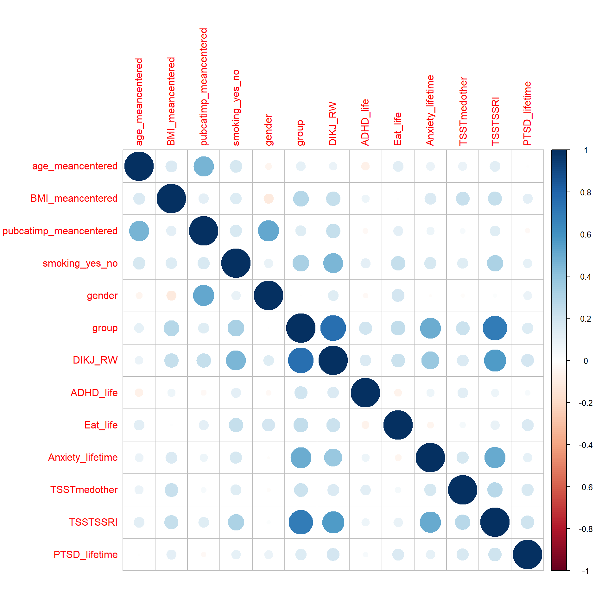
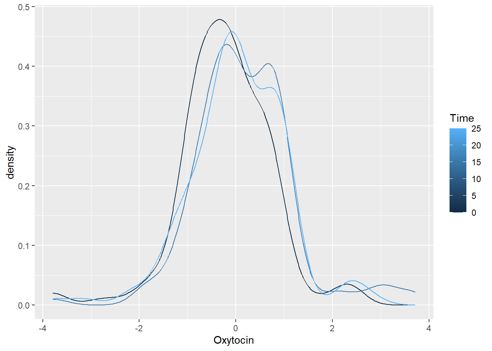

Endo DEP TSST LMM
AGC
26 4 2022
Last updated: 2022-04-27
Checks: 7 0
Knit directory: S://KJP_Biolabor/Projects/FemNAT-CD/DEP_TSST/
This reproducible R Markdown analysis was created with workflowr (version 1.7.0). The Checks tab describes the reproducibility checks that were applied when the results were created. The Past versions tab lists the development history.
Great! Since the R Markdown file has been committed to the Git repository, you know the exact version of the code that produced these results.
Great job! The global environment was empty. Objects defined in the global environment can affect the analysis in your R Markdown file in unknown ways. For reproduciblity it’s best to always run the code in an empty environment.
The command set.seed(20220426) was run prior to running the code in the R Markdown file. Setting a seed ensures that any results that rely on randomness, e.g. subsampling or permutations, are reproducible.
Great job! Recording the operating system, R version, and package versions is critical for reproducibility.
Nice! There were no cached chunks for this analysis, so you can be confident that you successfully produced the results during this run.
Great job! Using relative paths to the files within your workflowr project makes it easier to run your code on other machines.
Great! You are using Git for version control. Tracking code development and connecting the code version to the results is critical for reproducibility.
The results in this page were generated with repository version 7701a17. See the Past versions tab to see a history of the changes made to the R Markdown and HTML files.
Note that you need to be careful to ensure that all relevant files for the analysis have been committed to Git prior to generating the results (you can use wflow_publish or wflow_git_commit). workflowr only checks the R Markdown file, but you know if there are other scripts or data files that it depends on. Below is the status of the Git repository when the results were generated:
Ignored files:
Ignored: .Rproj.user/
Ignored: analysis/figure/
Untracked files:
Untracked: Info für Andreas.docx
Untracked: data/DEPHC_GU_DeskriptTSST_VUAMS_N=170 (175-5Dep).sav
Untracked: data/DEPHC_GU_DeskriptTSSThormones_175_final.sav
Untracked: workflow_helper.R
Untracked: ~$fo für Andreas.docx
Unstaged changes:
Modified: _workflowr.yml
Note that any generated files, e.g. HTML, png, CSS, etc., are not included in this status report because it is ok for generated content to have uncommitted changes.
There are no past versions. Publish this analysis with wflow_publish() to start tracking its development.
Prepare
Definitions
DV:
- psychologischer Stress („stressed")
- Cortisol („CORT")
- Testosteron („TEST")
- Oxytocin (OXT")
- log(TEST/CORT)
IV of no interest :
- Age scaled (“age_meancentered”)
- pubertal status (“pubcatimp”)
- “BMI_meancentered” #not in model * “stressed”
- “smoking_yes_no” #not in model * “stressed”
IV of interest :
- Gruppe (“group”) = 2-Faktor HC vs DEP [Dep ist mit 3, HCs mit 2 kodiert]
- sex (“gender”)
- Zeitpunkt (“Time”) with 2xpolynomes
- Gruppe x Zeitpunkt(Time each poly)
- Gruppe x sex
- Gruppe x sex x Zeitpunkt(Time each poly)
random effects
- individual id
sensitivity check 1
- quantitative DEP “DIKJ_RW” [instead of group]
- gender
sensitivity check 2
- ADHD lifetime diagnosis “ADHD_life”
- Essstörung “Eat_life”
- kombinierte ANX/PTSD “ANXPTSD_life”
not included parameters
- Medication (was included here)
- IQ
- Parental education
- Depression lifetime diagnosis
- PTSD lifetime diagnosis
- SUD lifetime diagnosis
- Anxiety lifetime diagnosis
- explstart_meancentered_min
read and check data
# df_ANS = as.data.frame(read_sav(paste0(home,"/data/DEPHC_GU_DeskriptTSST_VUAMS_N=170 (175-5Dep).sav")))
df_ENDO = as.data.frame(read_sav(paste0(home,"/data/DEPHC_GU_DeskriptTSSThormones_175_final.sav")))
df_ENDO$gender = drop(factor(df_ENDO$gender, levels = c(1,2),
labels=c("female", "male")))%>% relevel(., ref="male")
df_ENDO$group = drop(factor(df_ENDO$group, levels = c(2,3), labels=c("HC","DEP"))) %>% relevel(., ref="HC")
df_ENDO$twuid = as.factor(df_ENDO$twuid)
df_ENDO$ADHD_life = drop(factor(df_ENDO$ADHD_life, levels = c(0,1),
labels=c("no_ADHD", "ADHD")))%>% relevel(., ref="no_ADHD")
df_ENDO$Eat_life = drop(factor(df_ENDO$Eat_life, levels = c(0,1),
labels=c("no_EatDis", "EatDis")))%>% relevel(., ref="no_EatDis")
df_ENDO$ANXPTSD_life = drop(factor(df_ENDO$ANXPTSD_life, levels = c(0,1),
labels=c("no_ANXPTSD", "ANXPTSD")))%>% relevel(., ref="no_ANXPTSD")
df_ENDO$any_med_ccept = drop(factor(df_ENDO$any_med_ccept, levels = c(0,1),
labels=c("no_med", "med")))%>% relevel(., ref="no_med")
df_ENDO$smoking_yes_no = drop(factor(df_ENDO$smoking_yes_no, levels = c(0,1),
labels=c("no_smk", "smk")))%>% relevel(., ref="no_smk")
# table(df_ENDO$group, useNA = "always")
# table(df_ENDO$any_med_ccept, useNA = "always")
# table(df_ENDO$smoking_yes_no, useNA = "always")
# table(df_ENDO$gender, useNA = "always")
df_ENDO$TESTCORTlogBL = log(df_ENDO$TEST_BL_log/df_ENDO$CORT_BL_log)
df_ENDO$TESTCORTlogBL[is.infinite(df_ENDO$TESTCORTlogBL)] = NA
df_ENDO$TESTCORTlog10 = log(df_ENDO$TEST_10_log/df_ENDO$CORT_10_log)
df_ENDO$TESTCORTlog10[is.infinite(df_ENDO$TESTCORTlog10)] = NA
df_ENDO$TESTCORTlog55 = log(df_ENDO$TEST_55_log/df_ENDO$CORT_55_log)
df_ENDO$TESTCORTlog55[is.infinite(df_ENDO$TESTCORTlog55)] = NA
UV = c("age_meancentered", "BMI_meancentered", "pubcatimp",
#"any_med_ccept",
"smoking_yes_no", "gender", "group")
Sensvar = c("DIKJ_RW",
"ADHD_life",
"Eat_life",
"ANXPTSD_life")
AV = list(
AV_stressed = c(stressed_1=0, stressed_2=2,
stressed_3=10, stressed_4=16,
stressed_5=25, stressed_6=40,
stressed_7=55, stressed_8=70),
# ?? why is it named CORT44 here?
AV_CORT = c(CORT_BL_log=0, CORT_10_log=25, CORT_25_log=40, CORT_44_log=55, CORT_55_log=70) ,
AV_TEST = c(TEST_BL_log=0, TEST_10_log=25, TEST_55_log=70),
AV_TESTCORT = c(TESTCORTlogBL = 0, TESTCORTlog10=25, TESTCORTlog55 = 70),
AV_OXT = c(OXT_BL_log=0, OXT_1_log=16, OXT_10_log=25))
vartoplot = c(UV, Sensvar)
tmpframe = df_ENDO[,vartoplot[!vartoplot %in% c("centre")]]
tmpframe=tmpframe %>%
mutate_if(is.factor, function(x) as.numeric(x)-1)
corrplot::corrplot(cor(tmpframe, use = "pairwise"))
complete cohort descriptives
vars=c(UV, unlist(lapply(AV, names)), Sensvar)
res = compareGroups(group~., data = df_ENDO[,vars])
#summary(res)
export_table <- createTable(res)
export2md(export_table)| HC | DEP | p.overall | |
|---|---|---|---|
| N=72 | N=103 | ||
| age_meancentered | -0.19 (1.64) | 0.13 (1.43) | 0.183 |
| BMI_meancentered | -1.63 (3.35) | 1.14 (5.33) | <0.001 |
| pubcatimp | 3.89 (0.64) | 4.06 (0.57) | 0.075 |
| smoking_yes_no: | <0.001 | ||
| no_smk | 67 (93.1%) | 67 (65.0%) | |
| smk | 5 (6.94%) | 36 (35.0%) | |
| gender: | 1.000 | ||
| male | 27 (37.5%) | 39 (37.9%) | |
| female | 45 (62.5%) | 64 (62.1%) | |
| stressed_1 | 0.93 (1.51) | 2.97 (2.90) | <0.001 |
| stressed_2 | 2.33 (2.52) | 5.95 (3.25) | <0.001 |
| stressed_3 | 3.38 (2.88) | 6.45 (3.35) | <0.001 |
| stressed_4 | 1.09 (1.60) | 4.33 (3.19) | <0.001 |
| stressed_5 | 0.46 (0.91) | 2.96 (2.97) | <0.001 |
| stressed_6 | 0.37 (0.77) | 2.16 (2.44) | <0.001 |
| stressed_7 | 0.27 (0.55) | 1.79 (2.29) | <0.001 |
| stressed_8 | 0.30 (0.83) | 1.60 (2.28) | <0.001 |
| CORT_BL_log | 0.99 (0.61) | 1.14 (0.49) | 0.077 |
| CORT_10_log | 1.59 (0.80) | 1.35 (0.69) | 0.039 |
| CORT_25_log | 1.34 (0.76) | 1.30 (0.64) | 0.742 |
| CORT_44_log | 1.22 (0.63) | 1.19 (0.54) | 0.753 |
| CORT_55_log | 1.14 (0.52) | 1.09 (0.55) | 0.552 |
| TEST_BL_log | 3.63 (0.52) | 3.99 (0.56) | <0.001 |
| TEST_10_log | 3.83 (0.55) | 4.08 (0.54) | 0.003 |
| TEST_55_log | 3.74 (0.55) | 4.05 (0.55) | <0.001 |
| TESTCORTlogBL | 1.34 (0.57) | 1.35 (0.58) | 0.908 |
| TESTCORTlog10 | 1.05 (0.75) | 1.24 (0.59) | 0.077 |
| TESTCORTlog55 | 1.26 (0.53) | 1.42 (0.68) | 0.079 |
| OXT_BL_log | 0.19 (0.59) | 0.24 (0.22) | 0.581 |
| OXT_1_log | 0.47 (0.65) | 0.33 (0.24) | 0.192 |
| OXT_10_log | 0.29 (0.61) | 0.34 (0.25) | 0.611 |
| DIKJ_RW | 7.82 (5.54) | 25.7 (9.04) | <0.001 |
| ADHD_life: | 0.011 | ||
| no_ADHD | 72 (100%) | 94 (91.3%) | |
| ADHD | 0 (0.00%) | 9 (8.74%) | |
| Eat_life: | 0.003 | ||
| no_EatDis | 72 (100%) | 89 (86.4%) | |
| EatDis | 0 (0.00%) | 14 (13.6%) | |
| ANXPTSD_life: | <0.001 | ||
| no_ANXPTSD | 68 (94.4%) | 48 (46.6%) | |
| ANXPTSD | 4 (5.56%) | 55 (53.4%) |
male only cohort descriptives
res = compareGroups(group~., data = df_ENDO[,c(UV, unlist(lapply(AV, names)), Sensvar)],
subset = gender=="male")
export_table <- createTable(res)
export2md(export_table)| HC | DEP | p.overall | |
|---|---|---|---|
| N=27 | N=39 | ||
| age_meancentered | -0.19 (1.49) | 0.30 (1.35) | 0.182 |
| BMI_meancentered | -0.92 (3.06) | 1.81 (5.65) | 0.014 |
| pubcatimp | 3.44 (0.51) | 3.69 (0.52) | 0.058 |
| smoking_yes_no: | 0.332 | ||
| no_smk | 24 (88.9%) | 30 (76.9%) | |
| smk | 3 (11.1%) | 9 (23.1%) | |
| gender: male | 27 (100%) | 39 (100%) | . |
| stressed_1 | 0.80 (1.31) | 2.83 (2.60) | <0.001 |
| stressed_2 | 1.60 (1.97) | 4.90 (3.04) | <0.001 |
| stressed_3 | 3.16 (2.96) | 5.16 (3.51) | 0.016 |
| stressed_4 | 0.89 (1.34) | 3.55 (3.14) | <0.001 |
| stressed_5 | 0.61 (1.19) | 2.34 (2.89) | 0.001 |
| stressed_6 | 0.42 (0.98) | 1.63 (1.89) | 0.001 |
| stressed_7 | 0.33 (0.60) | 1.65 (2.09) | 0.001 |
| stressed_8 | 0.21 (0.38) | 1.25 (1.75) | 0.001 |
| CORT_BL_log | 0.94 (0.66) | 1.07 (0.53) | 0.410 |
| CORT_10_log | 1.53 (0.95) | 1.30 (0.67) | 0.279 |
| CORT_25_log | 1.25 (0.84) | 1.34 (0.68) | 0.628 |
| CORT_44_log | 1.07 (0.68) | 1.21 (0.64) | 0.403 |
| CORT_55_log | 1.06 (0.50) | 1.00 (0.64) | 0.716 |
| TEST_BL_log | 3.95 (0.50) | 4.40 (0.50) | 0.001 |
| TEST_10_log | 4.12 (0.51) | 4.50 (0.47) | 0.003 |
| TEST_55_log | 4.09 (0.49) | 4.45 (0.57) | 0.008 |
| TESTCORTlogBL | 1.30 (0.36) | 1.57 (0.75) | 0.067 |
| TESTCORTlog10 | 1.20 (0.86) | 1.36 (0.64) | 0.445 |
| TESTCORTlog55 | 1.41 (0.44) | 1.62 (0.71) | 0.147 |
| OXT_BL_log | -0.05 (0.68) | 0.22 (0.19) | 0.143 |
| OXT_1_log | 0.41 (0.64) | 0.30 (0.23) | 0.546 |
| OXT_10_log | 0.11 (0.64) | 0.29 (0.22) | 0.323 |
| DIKJ_RW | 7.22 (4.36) | 22.9 (8.10) | <0.001 |
| ADHD_life: | 0.138 | ||
| no_ADHD | 27 (100%) | 35 (89.7%) | |
| ADHD | 0 (0.00%) | 4 (10.3%) | |
| Eat_life: | 1.000 | ||
| no_EatDis | 27 (100%) | 38 (97.4%) | |
| EatDis | 0 (0.00%) | 1 (2.56%) | |
| ANXPTSD_life: | <0.001 | ||
| no_ANXPTSD | 26 (96.3%) | 18 (46.2%) | |
| ANXPTSD | 1 (3.70%) | 21 (53.8%) |
female only cohort descriptives
res = compareGroups(group~.,
data = df_ENDO[,c(UV, unlist(lapply(AV, names)), Sensvar)],
subset = gender=="female")
export_table <- createTable(res)
export2md(export_table)| HC | DEP | p.overall | |
|---|---|---|---|
| N=45 | N=64 | ||
| age_meancentered | -0.19 (1.75) | 0.03 (1.47) | 0.495 |
| BMI_meancentered | -2.05 (3.48) | 0.73 (5.13) | 0.001 |
| pubcatimp | 4.16 (0.56) | 4.28 (0.49) | 0.228 |
| smoking_yes_no: | <0.001 | ||
| no_smk | 43 (95.6%) | 37 (57.8%) | |
| smk | 2 (4.44%) | 27 (42.2%) | |
| gender: female | 45 (100%) | 64 (100%) | . |
| stressed_1 | 1.00 (1.63) | 3.05 (3.08) | <0.001 |
| stressed_2 | 2.75 (2.73) | 6.59 (3.24) | <0.001 |
| stressed_3 | 3.50 (2.86) | 7.24 (3.02) | <0.001 |
| stressed_4 | 1.22 (1.74) | 4.81 (3.15) | <0.001 |
| stressed_5 | 0.37 (0.68) | 3.35 (2.98) | <0.001 |
| stressed_6 | 0.34 (0.62) | 2.48 (2.68) | <0.001 |
| stressed_7 | 0.24 (0.53) | 1.88 (2.42) | <0.001 |
| stressed_8 | 0.35 (1.00) | 1.80 (2.53) | <0.001 |
| CORT_BL_log | 1.02 (0.58) | 1.19 (0.46) | 0.106 |
| CORT_10_log | 1.63 (0.71) | 1.38 (0.71) | 0.074 |
| CORT_25_log | 1.40 (0.70) | 1.28 (0.61) | 0.378 |
| CORT_44_log | 1.31 (0.58) | 1.18 (0.48) | 0.220 |
| CORT_55_log | 1.20 (0.53) | 1.15 (0.49) | 0.632 |
| TEST_BL_log | 3.44 (0.44) | 3.73 (0.43) | 0.001 |
| TEST_10_log | 3.66 (0.50) | 3.83 (0.40) | 0.056 |
| TEST_55_log | 3.52 (0.47) | 3.81 (0.39) | 0.001 |
| TESTCORTlogBL | 1.36 (0.65) | 1.22 (0.40) | 0.213 |
| TESTCORTlog10 | 0.96 (0.68) | 1.17 (0.56) | 0.088 |
| TESTCORTlog55 | 1.17 (0.57) | 1.31 (0.64) | 0.238 |
| OXT_BL_log | 0.33 (0.50) | 0.26 (0.23) | 0.492 |
| OXT_1_log | 0.51 (0.66) | 0.35 (0.24) | 0.255 |
| OXT_10_log | 0.38 (0.58) | 0.36 (0.26) | 0.894 |
| DIKJ_RW | 8.18 (6.17) | 27.4 (9.20) | <0.001 |
| ADHD_life: | 0.076 | ||
| no_ADHD | 45 (100%) | 59 (92.2%) | |
| ADHD | 0 (0.00%) | 5 (7.81%) | |
| Eat_life: | 0.003 | ||
| no_EatDis | 45 (100%) | 51 (79.7%) | |
| EatDis | 0 (0.00%) | 13 (20.3%) | |
| ANXPTSD_life: | <0.001 | ||
| no_ANXPTSD | 42 (93.3%) | 30 (46.9%) | |
| ANXPTSD | 3 (6.67%) | 34 (53.1%) |
linear model with mixed effects and time as polynomial
We adapted a boxed design by individual over Time with a 2 polynomial decomposion of time no site effect included as all samples where from Frankfurt
bio.model = "DV~1+age_meancentered+BMI_meancentered+pubcatimp+smoking_yes_no+gender+group+poly(Time, 2)+gender*group+poly(Time, 2)*group+gender*poly(Time, 2)*group+(1|twuid)"
psych.model = "DV~1+age_meancentered+pubcatimp+gender+group+poly(Time, 2)+gender*group+poly(Time, 2)*group+gender*poly(Time, 2)*group+(1|twuid)"
bio.model.nogen = "DV~1+age_meancentered+BMI_meancentered+pubcatimp+smoking_yes_no+group+poly(Time, 2)+poly(Time, 2)*group+(1|twuid)"
psych.model.nogen = "DV~1+age_meancentered+pubcatimp+group+poly(Time, 2)+poly(Time, 2)*group+(1|twuid)"
bio.model.quantcd = "DV~1+age_meancentered+BMI_meancentered+pubcatimp+smoking_yes_no+gender+DIKJ_RW+poly(Time, 2)+gender*DIKJ_RW+poly(Time, 2)*DIKJ_RW+gender*poly(Time, 2)*DIKJ_RW+(1|twuid)"
psych.model.quantcd = "DV~1+age_meancentered+pubcatimp+gender+DIKJ_RW+poly(Time, 2)+gender*DIKJ_RW+poly(Time, 2)*DIKJ_RW+gender*poly(Time, 2)*DIKJ_RW+(1|twuid)"
models=list(
AV_stressed = psych.model,
AV_CORT = bio.model,
AV_TEST = bio.model,
AV_TESTCORT = bio.model,
AV_OXT = bio.model)
models.nogen=list(
AV_stressed = psych.model.nogen,
AV_CORT = bio.model.nogen,
AV_TEST = bio.model.nogen,
AV_TESTCORT = bio.model.nogen,
AV_OXT = bio.model.nogen)
models.quant=list(
AV_stressed = psych.model.quantcd,
AV_CORT = bio.model.quantcd,
AV_TEST = bio.model.quantcd,
AV_TESTCORT = bio.model.quantcd,
AV_OXT = bio.model.quantcd)lm.beta.lmer <- function(mod) {
b <- fixef(mod)[-1]
sd.x <- apply(getME(mod,"X")[,-1],2,sd)
sd.y <- sd(getME(mod,"y"))
b*sd.x/sd.y
}
resall = list()
for (depvar in names(AV)){
cols = names(AV[[depvar]])
long = df_ENDO[,c("twuid",cols, UV, Sensvar)] %>%
gather(key = "value", value = "DV", all_of(cols))
long$twuid = as.factor(long$twuid)
long2 = long%>% mutate_if(is.numeric, scale)
long2$Time = AV[[depvar]][long2$value]
long2$value =as.factor(long2$value) %>%
relevel(., ref=grep("BL|stressed_1", unique(long2$value),value = T))
model.lme = lme4::lmer(models[[depvar]], data=long2)
model.lme0 = lme4::lmer(DV~1+(1|twuid), data=long2)
anovah0 = anova(model.lme0, model.lme)
model_p_val = anovah0$`Pr(>Chisq)`[2]
Res = summary(model.lme)
resall[[depvar]] = model.lme
resall[[paste0(depvar,"_longdat")]] = long2
res.coeff = as.data.frame(Res$coefficients)
res.coeff$stbeta = c(NA,lm.beta.lmer(model.lme))
res.coeff$pvalue = pt(abs(res.coeff$"t value"), 1000000, lower.tail = F) * 2
resall[[paste0(depvar,"_coeff")]]=res.coeff
resall[[paste0(depvar,"_modsig")]]=model_p_val
## DEP quant
model.lme = lme4::lmer(models.quant[[depvar]], data=long2)
Res = summary(model.lme)
resall[[depvar]] = model.lme
resall[[paste0(depvar,"_longdat")]] = long2
res.coeff = as.data.frame(Res$coefficients)
res.coeff$stbeta = c(NA,lm.beta.lmer(model.lme))
res.coeff$pvalue = pt(abs(res.coeff$"t value"), 1000000, lower.tail = F) * 2
resall[[paste0(depvar,"_coeff_DEPquant")]]=res.coeff
## nogenmod
### males
model.lme = lme4::lmer(models.nogen[[depvar]], data=long2, subset = long2$gender=="male")
Res = summary(model.lme)
resall[[depvar]] = model.lme
resall[[paste0(depvar,"_longdat")]] = long2
res.coeff = as.data.frame(Res$coefficients)
res.coeff$stbeta = c(NA,lm.beta.lmer(model.lme))
res.coeff$pvalue = pt(abs(res.coeff$"t value"), 1000000, lower.tail = F) * 2
resall[[paste0(depvar,"_coeff_males")]]=res.coeff
### females
model.lme = lme4::lmer(models.nogen[[depvar]], data=long2, subset = long2$gender=="female")
Res = summary(model.lme)
resall[[depvar]] = model.lme
resall[[paste0(depvar,"_longdat")]] = long2
res.coeff = as.data.frame(Res$coefficients)
res.coeff$stbeta = c(NA,lm.beta.lmer(model.lme))
res.coeff$pvalue = pt(abs(res.coeff$"t value"), 1000000, lower.tail = F) * 2
resall[[paste0(depvar,"_coeff_females")]]=res.coeff
for (sv in Sensvar){
model.lme = lme4::lmer(str_replace(models[[depvar]], "~1+",paste0("~1+",sv,"+")), data=long2)
Res = summary(model.lme)
res.coeff = as.data.frame(Res$coefficients)
res.coeff$stbeta = c(NA,lm.beta.lmer(model.lme))
res.coeff$pvalue = pt(abs(res.coeff$"t value"), 1000000, lower.tail = F) * 2
resall[[paste0(depvar,"_coeff", "_",sv)]]=res.coeff
}
}refitting model(s) with ML (instead of REML)
refitting model(s) with ML (instead of REML)
refitting model(s) with ML (instead of REML)
refitting model(s) with ML (instead of REML)
refitting model(s) with ML (instead of REML)Results
stressed
full models: DV~1+age_meancentered+pubcatimp+gender+group+poly(Time, 2)+gendergroup+poly(Time, 2)group+genderpoly(Time, 2)group+(1|twuid)
h0 model: DV~1+(1|twuid):
overall model p-value:5.55e-86
tableplot = function (x){
x %>% dplyr::mutate_if(is.numeric, function(x){as.character(signif(x, 3))}) %>% kbl() %>% kable_classic()
}
depvar = "AV_stressed"
labeltag = "Psychological stress"
ggplot(data = resall[[paste0(depvar, "_longdat")]],
aes(DV, group=Time, col=Time)) +
ylab("density") + xlab(labeltag)+
geom_density()ggplot(data = resall[[paste0(depvar, "_longdat")]],
aes(Time,DV, col=group)) +
ylab(labeltag) + xlab("Time")+
geom_smooth(method = 'loess') + geom_point() + facet_wrap(~gender)`geom_smooth()` using formula 'y ~ x'
sensitivity analyses
resall[[paste0(depvar, "_coeff")]] %>% tableplot()| Estimate | Std. Error | t value | stbeta | pvalue | |
|---|---|---|---|---|---|
| (Intercept) | -0.445 | 0.126 | -3.52 | NA | 0.000433 |
| age_meancentered | 0.0509 | 0.0546 | 0.931 | 0.0509 | 0.352 |
| pubcatimp | 0.0561 | 0.0641 | 0.876 | 0.056 | 0.381 |
| genderfemale | 0.00406 | 0.163 | 0.0249 | 0.00197 | 0.98 |
| groupDEP | 0.576 | 0.15 | 3.83 | 0.284 | 0.000126 |
| poly(Time, 2)1 | -6.61 | 1.65 | -4.01 | -0.176 | 6.09e-05 |
| poly(Time, 2)2 | 0.437 | 1.65 | 0.265 | 0.0117 | 0.791 |
| genderfemale:groupDEP | 0.28 | 0.188 | 1.48 | 0.135 | 0.138 |
| groupDEP:poly(Time, 2)1 | -7.18 | 2.16 | -3.33 | -0.147 | 0.000869 |
| groupDEP:poly(Time, 2)2 | 1.19 | 2.15 | 0.554 | 0.0244 | 0.579 |
| genderfemale:poly(Time, 2)1 | -2.67 | 2.08 | -1.28 | -0.0562 | 0.201 |
| genderfemale:poly(Time, 2)2 | 2.45 | 2.08 | 1.18 | 0.0518 | 0.239 |
| genderfemale:groupDEP:poly(Time, 2)1 | -0.702 | 2.73 | -0.258 | -0.0113 | 0.797 |
| genderfemale:groupDEP:poly(Time, 2)2 | -3.73 | 2.72 | -1.37 | -0.0603 | 0.17 |
resall[[paste0(depvar, "_coeff_DEPquant")]] %>% tableplot()| Estimate | Std. Error | t value | stbeta | pvalue | |
|---|---|---|---|---|---|
| (Intercept) | -0.0607 | 0.08 | -0.759 | NA | 0.448 |
| age_meancentered | 0.0639 | 0.0512 | 1.25 | 0.0637 | 0.212 |
| pubcatimp | 0.0106 | 0.0606 | 0.175 | 0.0105 | 0.861 |
| genderfemale | 0.102 | 0.108 | 0.943 | 0.0494 | 0.346 |
| DIKJ_RW | 0.397 | 0.0806 | 4.93 | 0.396 | 8.19e-07 |
| poly(Time, 2)1 | -12 | 1.1 | -10.9 | -0.321 | 8.21e-28 |
| poly(Time, 2)2 | 1.16 | 1.1 | 1.06 | 0.0309 | 0.29 |
| genderfemale:DIKJ_RW | 0.0592 | 0.0942 | 0.628 | 0.0495 | 0.53 |
| DIKJ_RW:poly(Time, 2)1 | -5.32 | 1.26 | -4.22 | -0.141 | 2.44e-05 |
| DIKJ_RW:poly(Time, 2)2 | 0.188 | 1.25 | 0.151 | 0.005 | 0.88 |
| genderfemale:poly(Time, 2)1 | -1.64 | 1.38 | -1.19 | -0.0346 | 0.234 |
| genderfemale:poly(Time, 2)2 | 0.357 | 1.37 | 0.26 | 0.00753 | 0.795 |
| genderfemale:DIKJ_RW:poly(Time, 2)1 | 1.97 | 1.48 | 1.33 | 0.0442 | 0.183 |
| genderfemale:DIKJ_RW:poly(Time, 2)2 | -1.19 | 1.47 | -0.812 | -0.0268 | 0.417 |
resall[[paste0(depvar, "_coeff_males")]] %>% tableplot()| Estimate | Std. Error | t value | stbeta | pvalue | |
|---|---|---|---|---|---|
| (Intercept) | -0.289 | 0.136 | -2.13 | NA | 0.0332 |
| age_meancentered | -0.052 | 0.0928 | -0.56 | -0.0546 | 0.575 |
| pubcatimp | 0.243 | 0.101 | 2.39 | 0.236 | 0.0166 |
| groupDEP | 0.532 | 0.142 | 3.74 | 0.295 | 0.000187 |
| poly(Time, 2)1 | -6.61 | 1.45 | -4.55 | -0.199 | 5.25e-06 |
| poly(Time, 2)2 | 0.436 | 1.45 | 0.301 | 0.0131 | 0.763 |
| groupDEP:poly(Time, 2)1 | -7.2 | 1.9 | -3.79 | -0.166 | 0.000148 |
| groupDEP:poly(Time, 2)2 | 1.2 | 1.89 | 0.632 | 0.0276 | 0.527 |
resall[[paste0(depvar, "_coeff_females")]] %>% tableplot()| Estimate | Std. Error | t value | stbeta | pvalue | |
|---|---|---|---|---|---|
| (Intercept) | -0.407 | 0.095 | -4.29 | NA | 1.78e-05 |
| age_meancentered | 0.0955 | 0.067 | 1.42 | 0.0942 | 0.154 |
| pubcatimp | -0.0435 | 0.0817 | -0.532 | -0.0353 | 0.595 |
| groupDEP | 0.87 | 0.119 | 7.29 | 0.406 | 3.15e-13 |
| poly(Time, 2)1 | -9.27 | 1.36 | -6.82 | -0.235 | 8.93e-12 |
| poly(Time, 2)2 | 2.89 | 1.36 | 2.13 | 0.0733 | 0.0332 |
| groupDEP:poly(Time, 2)1 | -7.89 | 1.78 | -4.44 | -0.153 | 9.02e-06 |
| groupDEP:poly(Time, 2)2 | -2.54 | 1.77 | -1.43 | -0.0493 | 0.152 |
resall[[paste0(depvar, "_coeff_ADHD_life")]] %>% tableplot()| Estimate | Std. Error | t value | stbeta | pvalue | |
|---|---|---|---|---|---|
| (Intercept) | -0.443 | 0.126 | -3.52 | NA | 0.000425 |
| ADHD_lifeADHD | 0.312 | 0.207 | 1.51 | 0.0692 | 0.132 |
| age_meancentered | 0.058 | 0.0546 | 1.06 | 0.058 | 0.289 |
| pubcatimp | 0.0563 | 0.0639 | 0.882 | 0.0562 | 0.378 |
| genderfemale | 0.00387 | 0.162 | 0.0239 | 0.00188 | 0.981 |
| groupDEP | 0.541 | 0.151 | 3.58 | 0.267 | 0.000348 |
| poly(Time, 2)1 | -6.61 | 1.65 | -4.01 | -0.176 | 6.09e-05 |
| poly(Time, 2)2 | 0.437 | 1.65 | 0.265 | 0.0117 | 0.791 |
| genderfemale:groupDEP | 0.289 | 0.188 | 1.54 | 0.139 | 0.124 |
| groupDEP:poly(Time, 2)1 | -7.19 | 2.16 | -3.33 | -0.147 | 0.000863 |
| groupDEP:poly(Time, 2)2 | 1.19 | 2.15 | 0.554 | 0.0244 | 0.58 |
| genderfemale:poly(Time, 2)1 | -2.67 | 2.08 | -1.28 | -0.0562 | 0.201 |
| genderfemale:poly(Time, 2)2 | 2.45 | 2.08 | 1.18 | 0.0518 | 0.239 |
| genderfemale:groupDEP:poly(Time, 2)1 | -0.7 | 2.73 | -0.257 | -0.0113 | 0.797 |
| genderfemale:groupDEP:poly(Time, 2)2 | -3.73 | 2.72 | -1.37 | -0.0603 | 0.17 |
resall[[paste0(depvar, "_coeff_Eat_life")]] %>% tableplot()| Estimate | Std. Error | t value | stbeta | pvalue | |
|---|---|---|---|---|---|
| (Intercept) | -0.441 | 0.127 | -3.48 | NA | 5e-04 |
| Eat_lifeEatDis | 0.14 | 0.179 | 0.785 | 0.0382 | 0.433 |
| age_meancentered | 0.0436 | 0.0555 | 0.786 | 0.0437 | 0.432 |
| pubcatimp | 0.0616 | 0.0645 | 0.954 | 0.0614 | 0.34 |
| genderfemale | -0.00231 | 0.163 | -0.0142 | -0.00112 | 0.989 |
| groupDEP | 0.572 | 0.15 | 3.81 | 0.282 | 0.000142 |
| poly(Time, 2)1 | -6.61 | 1.65 | -4.01 | -0.176 | 6.08e-05 |
| poly(Time, 2)2 | 0.437 | 1.65 | 0.265 | 0.0117 | 0.791 |
| genderfemale:groupDEP | 0.255 | 0.191 | 1.33 | 0.123 | 0.183 |
| groupDEP:poly(Time, 2)1 | -7.18 | 2.16 | -3.33 | -0.147 | 0.000868 |
| groupDEP:poly(Time, 2)2 | 1.19 | 2.15 | 0.554 | 0.0244 | 0.579 |
| genderfemale:poly(Time, 2)1 | -2.66 | 2.08 | -1.28 | -0.0562 | 0.201 |
| genderfemale:poly(Time, 2)2 | 2.45 | 2.08 | 1.18 | 0.0518 | 0.239 |
| genderfemale:groupDEP:poly(Time, 2)1 | -0.703 | 2.73 | -0.258 | -0.0113 | 0.797 |
| genderfemale:groupDEP:poly(Time, 2)2 | -3.73 | 2.72 | -1.37 | -0.0603 | 0.17 |
resall[[paste0(depvar, "_coeff_ANXPTSD_life")]] %>% tableplot()| Estimate | Std. Error | t value | stbeta | pvalue | |
|---|---|---|---|---|---|
| (Intercept) | -0.453 | 0.125 | -3.61 | NA | 0.000304 |
| ANXPTSD_lifeANXPTSD | 0.211 | 0.109 | 1.95 | 0.0997 | 0.0517 |
| age_meancentered | 0.0517 | 0.0542 | 0.954 | 0.0518 | 0.34 |
| pubcatimp | 0.0556 | 0.0636 | 0.874 | 0.0554 | 0.382 |
| genderfemale | -0.00151 | 0.162 | -0.00934 | -0.000731 | 0.993 |
| groupDEP | 0.47 | 0.159 | 2.96 | 0.231 | 0.00303 |
| poly(Time, 2)1 | -6.61 | 1.65 | -4.01 | -0.176 | 6.09e-05 |
| poly(Time, 2)2 | 0.437 | 1.65 | 0.265 | 0.0117 | 0.791 |
| genderfemale:groupDEP | 0.288 | 0.187 | 1.54 | 0.139 | 0.124 |
| groupDEP:poly(Time, 2)1 | -7.18 | 2.16 | -3.33 | -0.146 | 0.000877 |
| groupDEP:poly(Time, 2)2 | 1.19 | 2.15 | 0.553 | 0.0243 | 0.58 |
| genderfemale:poly(Time, 2)1 | -2.67 | 2.08 | -1.28 | -0.0562 | 0.201 |
| genderfemale:poly(Time, 2)2 | 2.45 | 2.08 | 1.18 | 0.0518 | 0.239 |
| genderfemale:groupDEP:poly(Time, 2)1 | -0.703 | 2.73 | -0.258 | -0.0113 | 0.797 |
| genderfemale:groupDEP:poly(Time, 2)2 | -3.73 | 2.72 | -1.37 | -0.0602 | 0.17 |
CORT
full models: DV~1+age_meancentered+BMI_meancentered+pubcatimp+smoking_yes_no+gender+group+poly(Time, 2)+gendergroup+poly(Time, 2)group+genderpoly(Time, 2)group+(1|twuid)
h0 model:DV~1+(1|twuid):
overall model p-value:6.03e-20
depvar = "AV_CORT"
labeltag = "Cortisol"
ggplot(data = resall[[paste0(depvar, "_longdat")]],
aes(DV, group=Time, col=Time)) +
ylab("density") + xlab(labeltag)+
geom_density()
ggplot(data = resall[[paste0(depvar, "_longdat")]],
aes(Time,DV, col=group)) +
ylab(labeltag) + xlab("Time")+
geom_smooth(method = 'loess') + geom_point() + facet_wrap(~gender)`geom_smooth()` using formula 'y ~ x'sensitivity analyses
resall[[paste0(depvar, "_coeff")]] %>% tableplot()| Estimate | Std. Error | t value | stbeta | pvalue | |
|---|---|---|---|---|---|
| (Intercept) | 0.0154 | 0.18 | 0.0853 | NA | 0.932 |
| age_meancentered | 0.143 | 0.0782 | 1.83 | 0.144 | 0.0669 |
| BMI_meancentered | -0.0567 | 0.0686 | -0.826 | -0.0564 | 0.409 |
| pubcatimp | 0.101 | 0.093 | 1.09 | 0.1 | 0.276 |
| smoking_yes_nosmk | -0.167 | 0.166 | -1 | -0.0703 | 0.315 |
| genderfemale | 0.0703 | 0.234 | 0.301 | 0.0341 | 0.763 |
| groupDEP | -0.0173 | 0.216 | -0.0803 | -0.00855 | 0.936 |
| poly(Time, 2)1 | -0.502 | 1.41 | -0.357 | -0.017 | 0.721 |
| poly(Time, 2)2 | -7.33 | 1.41 | -5.22 | -0.248 | 1.84e-07 |
| genderfemale:groupDEP | -0.0325 | 0.272 | -0.119 | -0.0157 | 0.905 |
| groupDEP:poly(Time, 2)1 | -0.334 | 1.84 | -0.182 | -0.00864 | 0.856 |
| groupDEP:poly(Time, 2)2 | 1.4 | 1.84 | 0.763 | 0.0363 | 0.446 |
| genderfemale:poly(Time, 2)1 | 1.57 | 1.78 | 0.882 | 0.042 | 0.378 |
| genderfemale:poly(Time, 2)2 | -0.99 | 1.78 | -0.556 | -0.0264 | 0.578 |
| genderfemale:groupDEP:poly(Time, 2)1 | -2.16 | 2.33 | -0.926 | -0.044 | 0.354 |
| genderfemale:groupDEP:poly(Time, 2)2 | 3.91 | 2.33 | 1.68 | 0.0798 | 0.0934 |
resall[[paste0(depvar, "_coeff_DEPquant")]] %>% tableplot()| Estimate | Std. Error | t value | stbeta | pvalue | |
|---|---|---|---|---|---|
| (Intercept) | 0.00282 | 0.128 | 0.022 | NA | 0.982 |
| age_meancentered | 0.142 | 0.0794 | 1.79 | 0.142 | 0.0736 |
| BMI_meancentered | -0.0581 | 0.0686 | -0.848 | -0.0577 | 0.397 |
| pubcatimp | 0.106 | 0.0948 | 1.11 | 0.104 | 0.266 |
| smoking_yes_nosmk | -0.195 | 0.175 | -1.12 | -0.0825 | 0.263 |
| genderfemale | 0.0613 | 0.169 | 0.363 | 0.0296 | 0.717 |
| DIKJ_RW | -0.0336 | 0.128 | -0.262 | -0.0336 | 0.793 |
| poly(Time, 2)1 | -0.733 | 0.931 | -0.787 | -0.0247 | 0.431 |
| poly(Time, 2)2 | -6.42 | 0.931 | -6.89 | -0.216 | 5.53e-12 |
| genderfemale:DIKJ_RW | 0.0526 | 0.147 | 0.359 | 0.044 | 0.72 |
| DIKJ_RW:poly(Time, 2)1 | -1.18 | 1.05 | -1.12 | -0.0397 | 0.264 |
| DIKJ_RW:poly(Time, 2)2 | 1.52 | 1.05 | 1.44 | 0.0513 | 0.149 |
| genderfemale:poly(Time, 2)1 | 0.341 | 1.17 | 0.292 | 0.00909 | 0.77 |
| genderfemale:poly(Time, 2)2 | 0.893 | 1.17 | 0.764 | 0.0238 | 0.445 |
| genderfemale:DIKJ_RW:poly(Time, 2)1 | 0.134 | 1.25 | 0.108 | 0.00381 | 0.914 |
| genderfemale:DIKJ_RW:poly(Time, 2)2 | 1.01 | 1.25 | 0.81 | 0.0286 | 0.418 |
resall[[paste0(depvar, "_coeff_males")]] %>% tableplot()| Estimate | Std. Error | t value | stbeta | pvalue | |
|---|---|---|---|---|---|
| (Intercept) | 0.0851 | 0.234 | 0.364 | NA | 0.716 |
| age_meancentered | 0.125 | 0.165 | 0.761 | 0.108 | 0.446 |
| BMI_meancentered | 0.0767 | 0.12 | 0.64 | 0.0718 | 0.522 |
| pubcatimp | 0.192 | 0.178 | 1.08 | 0.153 | 0.279 |
| smoking_yes_nosmk | 0.151 | 0.324 | 0.465 | 0.0523 | 0.642 |
| groupDEP | -0.155 | 0.252 | -0.616 | -0.0707 | 0.538 |
| poly(Time, 2)1 | -0.502 | 1.44 | -0.349 | -0.0157 | 0.727 |
| poly(Time, 2)2 | -7.33 | 1.44 | -5.1 | -0.229 | 3.34e-07 |
| groupDEP:poly(Time, 2)1 | -0.334 | 1.88 | -0.178 | -0.00799 | 0.859 |
| groupDEP:poly(Time, 2)2 | 1.4 | 1.88 | 0.746 | 0.0335 | 0.455 |
resall[[paste0(depvar, "_coeff_females")]] %>% tableplot()| Estimate | Std. Error | t value | stbeta | pvalue | |
|---|---|---|---|---|---|
| (Intercept) | 0.0694 | 0.128 | 0.542 | NA | 0.588 |
| age_meancentered | 0.141 | 0.0856 | 1.65 | 0.156 | 0.099 |
| BMI_meancentered | -0.127 | 0.0835 | -1.52 | -0.132 | 0.128 |
| pubcatimp | 0.0696 | 0.107 | 0.649 | 0.0626 | 0.516 |
| smoking_yes_nosmk | -0.283 | 0.19 | -1.49 | -0.133 | 0.136 |
| groupDEP | 0.0431 | 0.172 | 0.251 | 0.0225 | 0.802 |
| poly(Time, 2)1 | 1.08 | 1.08 | 0.996 | 0.0385 | 0.319 |
| poly(Time, 2)2 | -8.32 | 1.08 | -7.71 | -0.298 | 1.27e-14 |
| groupDEP:poly(Time, 2)1 | -2.5 | 1.41 | -1.77 | -0.0684 | 0.0767 |
| groupDEP:poly(Time, 2)2 | 5.3 | 1.41 | 3.76 | 0.145 | 0.000169 |
resall[[paste0(depvar, "_coeff_ADHD_life")]] %>% tableplot()| Estimate | Std. Error | t value | stbeta | pvalue | |
|---|---|---|---|---|---|
| (Intercept) | 0.0119 | 0.18 | 0.0661 | NA | 0.947 |
| ADHD_lifeADHD | -0.326 | 0.296 | -1.1 | -0.0724 | 0.27 |
| age_meancentered | 0.135 | 0.0785 | 1.72 | 0.136 | 0.0853 |
| BMI_meancentered | -0.0546 | 0.0686 | -0.796 | -0.0543 | 0.426 |
| pubcatimp | 0.1 | 0.093 | 1.08 | 0.0991 | 0.281 |
| smoking_yes_nosmk | -0.15 | 0.167 | -0.904 | -0.0635 | 0.366 |
| genderfemale | 0.0733 | 0.233 | 0.314 | 0.0355 | 0.754 |
| groupDEP | 0.0173 | 0.218 | 0.0792 | 0.00851 | 0.937 |
| poly(Time, 2)1 | -0.502 | 1.41 | -0.357 | -0.017 | 0.721 |
| poly(Time, 2)2 | -7.33 | 1.41 | -5.22 | -0.248 | 1.84e-07 |
| genderfemale:groupDEP | -0.0474 | 0.272 | -0.174 | -0.0228 | 0.862 |
| groupDEP:poly(Time, 2)1 | -0.334 | 1.84 | -0.182 | -0.00864 | 0.856 |
| groupDEP:poly(Time, 2)2 | 1.4 | 1.84 | 0.763 | 0.0363 | 0.446 |
| genderfemale:poly(Time, 2)1 | 1.57 | 1.78 | 0.883 | 0.042 | 0.377 |
| genderfemale:poly(Time, 2)2 | -0.99 | 1.78 | -0.556 | -0.0264 | 0.578 |
| genderfemale:groupDEP:poly(Time, 2)1 | -2.16 | 2.33 | -0.926 | -0.0441 | 0.354 |
| genderfemale:groupDEP:poly(Time, 2)2 | 3.91 | 2.33 | 1.68 | 0.0798 | 0.0935 |
resall[[paste0(depvar, "_coeff_Eat_life")]] %>% tableplot()| Estimate | Std. Error | t value | stbeta | pvalue | |
|---|---|---|---|---|---|
| (Intercept) | 0.0143 | 0.181 | 0.0787 | NA | 0.937 |
| Eat_lifeEatDis | -0.0297 | 0.256 | -0.116 | -0.00812 | 0.907 |
| age_meancentered | 0.145 | 0.0794 | 1.82 | 0.145 | 0.0683 |
| BMI_meancentered | -0.0572 | 0.069 | -0.83 | -0.0569 | 0.407 |
| pubcatimp | 0.1 | 0.0938 | 1.07 | 0.0992 | 0.285 |
| smoking_yes_nosmk | -0.164 | 0.168 | -0.981 | -0.0694 | 0.327 |
| genderfemale | 0.0716 | 0.235 | 0.305 | 0.0347 | 0.76 |
| groupDEP | -0.0165 | 0.217 | -0.0761 | -0.00813 | 0.939 |
| poly(Time, 2)1 | -0.502 | 1.41 | -0.357 | -0.017 | 0.721 |
| poly(Time, 2)2 | -7.33 | 1.41 | -5.22 | -0.248 | 1.84e-07 |
| genderfemale:groupDEP | -0.0278 | 0.276 | -0.101 | -0.0134 | 0.92 |
| groupDEP:poly(Time, 2)1 | -0.334 | 1.84 | -0.182 | -0.00864 | 0.856 |
| groupDEP:poly(Time, 2)2 | 1.4 | 1.84 | 0.763 | 0.0363 | 0.446 |
| genderfemale:poly(Time, 2)1 | 1.57 | 1.78 | 0.882 | 0.042 | 0.378 |
| genderfemale:poly(Time, 2)2 | -0.991 | 1.78 | -0.556 | -0.0265 | 0.578 |
| genderfemale:groupDEP:poly(Time, 2)1 | -2.16 | 2.33 | -0.926 | -0.044 | 0.354 |
| genderfemale:groupDEP:poly(Time, 2)2 | 3.91 | 2.33 | 1.68 | 0.0798 | 0.0934 |
resall[[paste0(depvar, "_coeff_ANXPTSD_life")]] %>% tableplot()| Estimate | Std. Error | t value | stbeta | pvalue | |
|---|---|---|---|---|---|
| (Intercept) | 0.0268 | 0.18 | 0.149 | NA | 0.882 |
| ANXPTSD_lifeANXPTSD | -0.262 | 0.155 | -1.69 | -0.123 | 0.0909 |
| age_meancentered | 0.142 | 0.0778 | 1.82 | 0.142 | 0.0686 |
| BMI_meancentered | -0.051 | 0.0683 | -0.746 | -0.0507 | 0.456 |
| pubcatimp | 0.101 | 0.0925 | 1.1 | 0.1 | 0.273 |
| smoking_yes_nosmk | -0.173 | 0.165 | -1.05 | -0.0729 | 0.296 |
| genderfemale | 0.079 | 0.232 | 0.34 | 0.0383 | 0.734 |
| groupDEP | 0.109 | 0.227 | 0.479 | 0.0537 | 0.632 |
| poly(Time, 2)1 | -0.502 | 1.41 | -0.357 | -0.017 | 0.721 |
| poly(Time, 2)2 | -7.33 | 1.41 | -5.22 | -0.248 | 1.84e-07 |
| genderfemale:groupDEP | -0.0399 | 0.271 | -0.147 | -0.0192 | 0.883 |
| groupDEP:poly(Time, 2)1 | -0.334 | 1.84 | -0.182 | -0.00864 | 0.856 |
| groupDEP:poly(Time, 2)2 | 1.4 | 1.84 | 0.763 | 0.0363 | 0.446 |
| genderfemale:poly(Time, 2)1 | 1.57 | 1.78 | 0.883 | 0.042 | 0.377 |
| genderfemale:poly(Time, 2)2 | -0.99 | 1.78 | -0.556 | -0.0264 | 0.578 |
| genderfemale:groupDEP:poly(Time, 2)1 | -2.16 | 2.33 | -0.926 | -0.0441 | 0.354 |
| genderfemale:groupDEP:poly(Time, 2)2 | 3.91 | 2.33 | 1.68 | 0.0798 | 0.0935 |
TEST
full models: DV~1+age_meancentered+BMI_meancentered+pubcatimp+smoking_yes_no+gender+group+poly(Time, 2)+gendergroup+poly(Time, 2)group+genderpoly(Time, 2)group+(1|twuid)
h0 model: DV~1+(1|twuid):
overall model p-value: 3.99e-25
depvar = "AV_TEST"
labeltag = "Testosterone"
ggplot(data = resall[[paste0(depvar, "_longdat")]],
aes(DV, group=Time, col=Time)) +
ylab("density") + xlab(labeltag)+
geom_density()ggplot(data = resall[[paste0(depvar, "_longdat")]],
aes(Time,DV, col=group)) +
ylab(labeltag) + xlab("Time")+
geom_smooth(method = 'loess') + geom_point() + facet_wrap(~gender)`geom_smooth()` using formula 'y ~ x'
sensitivity analyses
resall[[paste0(depvar, "_coeff")]] %>% tableplot()| Estimate | Std. Error | t value | stbeta | pvalue | |
|---|---|---|---|---|---|
| (Intercept) | 0.353 | 0.162 | 2.18 | NA | 0.0296 |
| age_meancentered | 0.11 | 0.0704 | 1.57 | 0.111 | 0.117 |
| BMI_meancentered | 0.0696 | 0.0617 | 1.13 | 0.0693 | 0.259 |
| pubcatimp | 0.0994 | 0.0837 | 1.19 | 0.0982 | 0.235 |
| smoking_yes_nosmk | 0.0997 | 0.149 | 0.668 | 0.0421 | 0.504 |
| genderfemale | -1.01 | 0.21 | -4.8 | -0.489 | 1.59e-06 |
| groupDEP | 0.577 | 0.194 | 2.97 | 0.284 | 0.00298 |
| poly(Time, 2)1 | 1.98 | 0.801 | 2.47 | 0.0865 | 0.0135 |
| poly(Time, 2)2 | -2.17 | 0.801 | -2.71 | -0.0951 | 0.00666 |
| genderfemale:groupDEP | -0.234 | 0.245 | -0.955 | -0.113 | 0.34 |
| groupDEP:poly(Time, 2)1 | -1.41 | 1.05 | -1.35 | -0.0472 | 0.178 |
| groupDEP:poly(Time, 2)2 | 0.666 | 1.05 | 0.636 | 0.0223 | 0.525 |
| genderfemale:poly(Time, 2)1 | -1.39 | 1.02 | -1.36 | -0.0478 | 0.173 |
| genderfemale:poly(Time, 2)2 | -1.53 | 1.01 | -1.51 | -0.0529 | 0.131 |
| genderfemale:groupDEP:poly(Time, 2)1 | 1.89 | 1.33 | 1.42 | 0.0498 | 0.156 |
| genderfemale:groupDEP:poly(Time, 2)2 | 1.73 | 1.33 | 1.31 | 0.0457 | 0.191 |
resall[[paste0(depvar, "_coeff_DEPquant")]] %>% tableplot()| Estimate | Std. Error | t value | stbeta | pvalue | |
|---|---|---|---|---|---|
| (Intercept) | 0.75 | 0.116 | 6.49 | NA | 8.81e-11 |
| age_meancentered | 0.119 | 0.0717 | 1.67 | 0.119 | 0.0959 |
| BMI_meancentered | 0.0794 | 0.0619 | 1.28 | 0.079 | 0.2 |
| pubcatimp | 0.075 | 0.0856 | 0.876 | 0.0738 | 0.381 |
| smoking_yes_nosmk | 0.0438 | 0.158 | 0.278 | 0.0185 | 0.781 |
| genderfemale | -1.19 | 0.152 | -7.8 | -0.575 | 6.34e-15 |
| DIKJ_RW | 0.347 | 0.116 | 3 | 0.347 | 0.00273 |
| poly(Time, 2)1 | 1.21 | 0.532 | 2.27 | 0.0527 | 0.0232 |
| poly(Time, 2)2 | -1.68 | 0.532 | -3.16 | -0.0734 | 0.00158 |
| genderfemale:DIKJ_RW | -0.202 | 0.132 | -1.52 | -0.169 | 0.128 |
| DIKJ_RW:poly(Time, 2)1 | -0.429 | 0.602 | -0.713 | -0.0187 | 0.476 |
| DIKJ_RW:poly(Time, 2)2 | 0.806 | 0.602 | 1.34 | 0.0352 | 0.181 |
| genderfemale:poly(Time, 2)1 | -0.362 | 0.669 | -0.542 | -0.0125 | 0.588 |
| genderfemale:poly(Time, 2)2 | -0.75 | 0.668 | -1.12 | -0.0259 | 0.261 |
| genderfemale:DIKJ_RW:poly(Time, 2)1 | 0.635 | 0.712 | 0.893 | 0.0233 | 0.372 |
| genderfemale:DIKJ_RW:poly(Time, 2)2 | 0.286 | 0.712 | 0.402 | 0.0105 | 0.688 |
resall[[paste0(depvar, "_coeff_males")]] %>% tableplot()| Estimate | Std. Error | t value | stbeta | pvalue | |
|---|---|---|---|---|---|
| (Intercept) | 0.526 | 0.185 | 2.84 | NA | 0.00455 |
| age_meancentered | 0.274 | 0.131 | 2.1 | 0.269 | 0.0356 |
| BMI_meancentered | 0.119 | 0.095 | 1.26 | 0.127 | 0.209 |
| pubcatimp | 0.275 | 0.141 | 1.95 | 0.248 | 0.051 |
| smoking_yes_nosmk | 0.231 | 0.257 | 0.898 | 0.0909 | 0.369 |
| groupDEP | 0.409 | 0.199 | 2.05 | 0.212 | 0.0403 |
| poly(Time, 2)1 | 1.98 | 0.71 | 2.79 | 0.0909 | 0.00528 |
| poly(Time, 2)2 | -2.17 | 0.71 | -3.06 | -0.0998 | 0.00219 |
| groupDEP:poly(Time, 2)1 | -1.41 | 0.929 | -1.52 | -0.0496 | 0.128 |
| groupDEP:poly(Time, 2)2 | 0.666 | 0.929 | 0.718 | 0.0234 | 0.473 |
resall[[paste0(depvar, "_coeff_females")]] %>% tableplot()| Estimate | Std. Error | t value | stbeta | pvalue | |
|---|---|---|---|---|---|
| (Intercept) | -0.628 | 0.119 | -5.26 | NA | 1.47e-07 |
| age_meancentered | 0.0354 | 0.0799 | 0.443 | 0.0461 | 0.658 |
| BMI_meancentered | 0.0716 | 0.0779 | 0.919 | 0.0877 | 0.358 |
| pubcatimp | -0.0198 | 0.1 | -0.198 | -0.021 | 0.843 |
| smoking_yes_nosmk | 0.0356 | 0.177 | 0.201 | 0.0198 | 0.841 |
| groupDEP | 0.399 | 0.16 | 2.49 | 0.246 | 0.0128 |
| poly(Time, 2)1 | 0.604 | 0.666 | 0.907 | 0.033 | 0.364 |
| poly(Time, 2)2 | -3.7 | 0.66 | -5.61 | -0.203 | 2.07e-08 |
| groupDEP:poly(Time, 2)1 | 0.465 | 0.868 | 0.536 | 0.0195 | 0.592 |
| groupDEP:poly(Time, 2)2 | 2.4 | 0.864 | 2.77 | 0.1 | 0.00556 |
resall[[paste0(depvar, "_coeff_ADHD_life")]] %>% tableplot()| Estimate | Std. Error | t value | stbeta | pvalue | |
|---|---|---|---|---|---|
| (Intercept) | 0.35 | 0.162 | 2.16 | NA | 0.031 |
| ADHD_lifeADHD | -0.276 | 0.266 | -1.04 | -0.0613 | 0.3 |
| age_meancentered | 0.103 | 0.0707 | 1.46 | 0.104 | 0.143 |
| BMI_meancentered | 0.0714 | 0.0617 | 1.16 | 0.0711 | 0.247 |
| pubcatimp | 0.0984 | 0.0837 | 1.18 | 0.0972 | 0.24 |
| smoking_yes_nosmk | 0.113 | 0.15 | 0.757 | 0.0479 | 0.449 |
| genderfemale | -1.01 | 0.21 | -4.79 | -0.488 | 1.68e-06 |
| groupDEP | 0.606 | 0.196 | 3.09 | 0.299 | 0.00201 |
| poly(Time, 2)1 | 1.98 | 0.801 | 2.47 | 0.0865 | 0.0135 |
| poly(Time, 2)2 | -2.17 | 0.801 | -2.71 | -0.0951 | 0.00666 |
| genderfemale:groupDEP | -0.246 | 0.245 | -1.01 | -0.119 | 0.315 |
| groupDEP:poly(Time, 2)1 | -1.41 | 1.05 | -1.35 | -0.0472 | 0.178 |
| groupDEP:poly(Time, 2)2 | 0.666 | 1.05 | 0.636 | 0.0223 | 0.525 |
| genderfemale:poly(Time, 2)1 | -1.39 | 1.02 | -1.36 | -0.0477 | 0.173 |
| genderfemale:poly(Time, 2)2 | -1.53 | 1.01 | -1.51 | -0.0529 | 0.131 |
| genderfemale:groupDEP:poly(Time, 2)1 | 1.89 | 1.33 | 1.42 | 0.0498 | 0.156 |
| genderfemale:groupDEP:poly(Time, 2)2 | 1.73 | 1.33 | 1.31 | 0.0457 | 0.191 |
resall[[paste0(depvar, "_coeff_Eat_life")]] %>% tableplot()| Estimate | Std. Error | t value | stbeta | pvalue | |
|---|---|---|---|---|---|
| (Intercept) | 0.362 | 0.163 | 2.23 | NA | 0.026 |
| Eat_lifeEatDis | 0.229 | 0.229 | 0.998 | 0.0626 | 0.318 |
| age_meancentered | 0.0994 | 0.0712 | 1.39 | 0.0997 | 0.163 |
| BMI_meancentered | 0.0736 | 0.0619 | 1.19 | 0.0733 | 0.234 |
| pubcatimp | 0.108 | 0.0841 | 1.28 | 0.106 | 0.201 |
| smoking_yes_nosmk | 0.0824 | 0.15 | 0.549 | 0.0348 | 0.583 |
| genderfemale | -1.02 | 0.21 | -4.84 | -0.494 | 1.29e-06 |
| groupDEP | 0.57 | 0.194 | 2.93 | 0.281 | 0.00335 |
| poly(Time, 2)1 | 1.98 | 0.801 | 2.47 | 0.0865 | 0.0135 |
| poly(Time, 2)2 | -2.17 | 0.801 | -2.71 | -0.0951 | 0.00666 |
| genderfemale:groupDEP | -0.27 | 0.248 | -1.09 | -0.13 | 0.275 |
| groupDEP:poly(Time, 2)1 | -1.41 | 1.05 | -1.35 | -0.0472 | 0.178 |
| groupDEP:poly(Time, 2)2 | 0.666 | 1.05 | 0.636 | 0.0223 | 0.525 |
| genderfemale:poly(Time, 2)1 | -1.39 | 1.02 | -1.36 | -0.0478 | 0.173 |
| genderfemale:poly(Time, 2)2 | -1.53 | 1.01 | -1.51 | -0.0529 | 0.131 |
| genderfemale:groupDEP:poly(Time, 2)1 | 1.89 | 1.33 | 1.42 | 0.0498 | 0.156 |
| genderfemale:groupDEP:poly(Time, 2)2 | 1.73 | 1.33 | 1.31 | 0.0457 | 0.191 |
resall[[paste0(depvar, "_coeff_ANXPTSD_life")]] %>% tableplot()| Estimate | Std. Error | t value | stbeta | pvalue | |
|---|---|---|---|---|---|
| (Intercept) | 0.349 | 0.163 | 2.15 | NA | 0.0318 |
| ANXPTSD_lifeANXPTSD | 0.0824 | 0.141 | 0.586 | 0.0388 | 0.558 |
| age_meancentered | 0.111 | 0.0705 | 1.57 | 0.111 | 0.116 |
| BMI_meancentered | 0.0678 | 0.0619 | 1.1 | 0.0675 | 0.273 |
| pubcatimp | 0.0993 | 0.0839 | 1.18 | 0.0982 | 0.236 |
| smoking_yes_nosmk | 0.102 | 0.15 | 0.679 | 0.0429 | 0.497 |
| genderfemale | -1.01 | 0.211 | -4.8 | -0.49 | 1.57e-06 |
| groupDEP | 0.537 | 0.206 | 2.61 | 0.265 | 0.00915 |
| poly(Time, 2)1 | 1.98 | 0.801 | 2.47 | 0.0865 | 0.0135 |
| poly(Time, 2)2 | -2.17 | 0.801 | -2.71 | -0.0951 | 0.00666 |
| genderfemale:groupDEP | -0.232 | 0.245 | -0.943 | -0.112 | 0.345 |
| groupDEP:poly(Time, 2)1 | -1.41 | 1.05 | -1.35 | -0.0472 | 0.178 |
| groupDEP:poly(Time, 2)2 | 0.666 | 1.05 | 0.636 | 0.0223 | 0.525 |
| genderfemale:poly(Time, 2)1 | -1.39 | 1.02 | -1.36 | -0.0478 | 0.173 |
| genderfemale:poly(Time, 2)2 | -1.53 | 1.01 | -1.51 | -0.0529 | 0.131 |
| genderfemale:groupDEP:poly(Time, 2)1 | 1.89 | 1.33 | 1.42 | 0.0498 | 0.156 |
| genderfemale:groupDEP:poly(Time, 2)2 | 1.73 | 1.33 | 1.31 | 0.0457 | 0.191 |
TEST/CORT ratio
full models: DV~1+age_meancentered+BMI_meancentered+pubcatimp+smoking_yes_no+gender+group+poly(Time, 2)+gendergroup+poly(Time, 2)group+genderpoly(Time, 2)group+(1|twuid)
h0 model: DV~1+(1|twuid):
overall model p-value: 9.6e-07
depvar = "AV_TESTCORT"
labeltag = "Testosterone/Cortisol ratio"
ggplot(data = resall[[paste0(depvar, "_longdat")]],
aes(DV, group=Time, col=Time)) +
ylab("density") + xlab(labeltag)+
geom_density()
ggplot(data = resall[[paste0(depvar, "_longdat")]],
aes(Time,DV, col=group)) +
ylab(labeltag) + xlab("Time")+
geom_smooth(method = 'loess') + geom_point() + facet_wrap(~gender)`geom_smooth()` using formula 'y ~ x'
sensitivity analyses
resall[[paste0(depvar, "_coeff")]] %>% tableplot()| Estimate | Std. Error | t value | stbeta | pvalue | |
|---|---|---|---|---|---|
| (Intercept) | 0.0115 | 0.186 | 0.0616 | NA | 0.951 |
| age_meancentered | -0.0932 | 0.0799 | -1.17 | -0.0936 | 0.243 |
| BMI_meancentered | 0.0798 | 0.0701 | 1.14 | 0.0792 | 0.255 |
| pubcatimp | -0.102 | 0.0952 | -1.08 | -0.101 | 0.282 |
| smoking_yes_nosmk | 0.0159 | 0.169 | 0.0938 | 0.00674 | 0.925 |
| genderfemale | -0.126 | 0.24 | -0.524 | -0.0606 | 0.601 |
| groupDEP | 0.358 | 0.222 | 1.61 | 0.176 | 0.107 |
| poly(Time, 2)1 | 0.668 | 1.73 | 0.387 | 0.0291 | 0.699 |
| poly(Time, 2)2 | 3.4 | 1.71 | 1.99 | 0.149 | 0.0471 |
| genderfemale:groupDEP | -0.294 | 0.279 | -1.05 | -0.142 | 0.292 |
| groupDEP:poly(Time, 2)1 | 1.18 | 2.23 | 0.531 | 0.0397 | 0.596 |
| groupDEP:poly(Time, 2)2 | 0.38 | 2.21 | 0.172 | 0.0128 | 0.863 |
| genderfemale:poly(Time, 2)1 | -1.77 | 2.16 | -0.818 | -0.0612 | 0.413 |
| genderfemale:poly(Time, 2)2 | 2.6 | 2.13 | 1.22 | 0.0908 | 0.222 |
| genderfemale:groupDEP:poly(Time, 2)1 | 1.63 | 2.79 | 0.582 | 0.0433 | 0.561 |
| genderfemale:groupDEP:poly(Time, 2)2 | -4.99 | 2.76 | -1.8 | -0.133 | 0.0713 |
resall[[paste0(depvar, "_coeff_DEPquant")]] %>% tableplot()| Estimate | Std. Error | t value | stbeta | pvalue | |
|---|---|---|---|---|---|
| (Intercept) | 0.255 | 0.131 | 1.94 | NA | 0.052 |
| age_meancentered | -0.0949 | 0.0811 | -1.17 | -0.0946 | 0.242 |
| BMI_meancentered | 0.0836 | 0.0701 | 1.19 | 0.0828 | 0.233 |
| pubcatimp | -0.107 | 0.0969 | -1.1 | -0.104 | 0.269 |
| smoking_yes_nosmk | 0.0343 | 0.178 | 0.193 | 0.0146 | 0.847 |
| genderfemale | -0.334 | 0.173 | -1.94 | -0.16 | 0.0528 |
| DIKJ_RW | 0.158 | 0.132 | 1.19 | 0.157 | 0.232 |
| poly(Time, 2)1 | 1.54 | 1.13 | 1.36 | 0.0669 | 0.172 |
| poly(Time, 2)2 | 3.57 | 1.12 | 3.19 | 0.156 | 0.00141 |
| genderfemale:DIKJ_RW | -0.173 | 0.15 | -1.15 | -0.146 | 0.249 |
| DIKJ_RW:poly(Time, 2)1 | 1.83 | 1.29 | 1.42 | 0.0794 | 0.157 |
| DIKJ_RW:poly(Time, 2)2 | -1.33 | 1.27 | -1.05 | -0.0583 | 0.295 |
| genderfemale:poly(Time, 2)1 | -0.968 | 1.41 | -0.686 | -0.0334 | 0.493 |
| genderfemale:poly(Time, 2)2 | -0.134 | 1.39 | -0.096 | -0.00465 | 0.924 |
| genderfemale:DIKJ_RW:poly(Time, 2)1 | -0.823 | 1.51 | -0.543 | -0.0303 | 0.587 |
| genderfemale:DIKJ_RW:poly(Time, 2)2 | 0.0358 | 1.49 | 0.0239 | 0.00132 | 0.981 |
resall[[paste0(depvar, "_coeff_males")]] %>% tableplot()| Estimate | Std. Error | t value | stbeta | pvalue | |
|---|---|---|---|---|---|
| (Intercept) | -0.0729 | 0.251 | -0.291 | NA | 0.771 |
| age_meancentered | 0.0808 | 0.176 | 0.459 | 0.07 | 0.646 |
| BMI_meancentered | -0.0123 | 0.128 | -0.0964 | -0.0117 | 0.923 |
| pubcatimp | -0.258 | 0.19 | -1.36 | -0.208 | 0.175 |
| smoking_yes_nosmk | -0.391 | 0.344 | -1.14 | -0.141 | 0.256 |
| groupDEP | 0.464 | 0.269 | 1.73 | 0.215 | 0.0844 |
| poly(Time, 2)1 | 0.536 | 1.73 | 0.311 | 0.0219 | 0.756 |
| poly(Time, 2)2 | 3.46 | 1.71 | 2.02 | 0.143 | 0.0431 |
| groupDEP:poly(Time, 2)1 | 1.39 | 2.23 | 0.623 | 0.0439 | 0.533 |
| groupDEP:poly(Time, 2)2 | 0.265 | 2.21 | 0.12 | 0.00843 | 0.905 |
resall[[paste0(depvar, "_coeff_females")]] %>% tableplot()| Estimate | Std. Error | t value | stbeta | pvalue | |
|---|---|---|---|---|---|
| (Intercept) | -0.124 | 0.128 | -0.968 | NA | 0.333 |
| age_meancentered | -0.151 | 0.0853 | -1.77 | -0.169 | 0.0767 |
| BMI_meancentered | 0.126 | 0.0833 | 1.51 | 0.131 | 0.131 |
| pubcatimp | -0.0543 | 0.107 | -0.507 | -0.0492 | 0.612 |
| smoking_yes_nosmk | 0.16 | 0.189 | 0.846 | 0.0758 | 0.397 |
| groupDEP | -0.0185 | 0.171 | -0.108 | -0.00971 | 0.914 |
| poly(Time, 2)1 | -1.16 | 1.29 | -0.902 | -0.0541 | 0.367 |
| poly(Time, 2)2 | 5.97 | 1.27 | 4.71 | 0.28 | 2.48e-06 |
| groupDEP:poly(Time, 2)1 | 2.87 | 1.68 | 1.71 | 0.103 | 0.0864 |
| groupDEP:poly(Time, 2)2 | -4.58 | 1.66 | -2.76 | -0.164 | 0.0057 |
resall[[paste0(depvar, "_coeff_ADHD_life")]] %>% tableplot()| Estimate | Std. Error | t value | stbeta | pvalue | |
|---|---|---|---|---|---|
| (Intercept) | 0.0144 | 0.186 | 0.0772 | NA | 0.938 |
| ADHD_lifeADHD | 0.273 | 0.301 | 0.906 | 0.0615 | 0.365 |
| age_meancentered | -0.0863 | 0.0803 | -1.08 | -0.0866 | 0.282 |
| BMI_meancentered | 0.078 | 0.0702 | 1.11 | 0.0774 | 0.267 |
| pubcatimp | -0.101 | 0.0952 | -1.06 | -0.0994 | 0.288 |
| smoking_yes_nosmk | 0.00228 | 0.17 | 0.0134 | 0.00097 | 0.989 |
| genderfemale | -0.128 | 0.24 | -0.534 | -0.0619 | 0.593 |
| groupDEP | 0.328 | 0.225 | 1.46 | 0.162 | 0.144 |
| poly(Time, 2)1 | 0.668 | 1.73 | 0.387 | 0.0291 | 0.699 |
| poly(Time, 2)2 | 3.4 | 1.71 | 1.98 | 0.149 | 0.0472 |
| genderfemale:groupDEP | -0.281 | 0.28 | -1.01 | -0.136 | 0.314 |
| groupDEP:poly(Time, 2)1 | 1.18 | 2.23 | 0.529 | 0.0395 | 0.597 |
| groupDEP:poly(Time, 2)2 | 0.382 | 2.21 | 0.173 | 0.0128 | 0.863 |
| genderfemale:poly(Time, 2)1 | -1.77 | 2.16 | -0.818 | -0.0611 | 0.413 |
| genderfemale:poly(Time, 2)2 | 2.6 | 2.13 | 1.22 | 0.0908 | 0.222 |
| genderfemale:groupDEP:poly(Time, 2)1 | 1.63 | 2.8 | 0.583 | 0.0433 | 0.56 |
| genderfemale:groupDEP:poly(Time, 2)2 | -4.99 | 2.77 | -1.8 | -0.133 | 0.0713 |
resall[[paste0(depvar, "_coeff_Eat_life")]] %>% tableplot()| Estimate | Std. Error | t value | stbeta | pvalue | |
|---|---|---|---|---|---|
| (Intercept) | 0.0147 | 0.187 | 0.0788 | NA | 0.937 |
| Eat_lifeEatDis | 0.0817 | 0.261 | 0.313 | 0.0223 | 0.754 |
| age_meancentered | -0.0972 | 0.0812 | -1.2 | -0.0975 | 0.231 |
| BMI_meancentered | 0.0812 | 0.0705 | 1.15 | 0.0807 | 0.249 |
| pubcatimp | -0.0995 | 0.0959 | -1.04 | -0.0977 | 0.299 |
| smoking_yes_nosmk | 0.00978 | 0.171 | 0.0573 | 0.00415 | 0.954 |
| genderfemale | -0.129 | 0.241 | -0.536 | -0.0624 | 0.592 |
| groupDEP | 0.355 | 0.223 | 1.59 | 0.175 | 0.111 |
| poly(Time, 2)1 | 0.665 | 1.73 | 0.385 | 0.0289 | 0.7 |
| poly(Time, 2)2 | 3.4 | 1.71 | 1.99 | 0.149 | 0.0468 |
| genderfemale:groupDEP | -0.307 | 0.283 | -1.08 | -0.149 | 0.278 |
| groupDEP:poly(Time, 2)1 | 1.19 | 2.23 | 0.533 | 0.0398 | 0.594 |
| groupDEP:poly(Time, 2)2 | 0.376 | 2.21 | 0.17 | 0.0127 | 0.865 |
| genderfemale:poly(Time, 2)1 | -1.76 | 2.16 | -0.816 | -0.061 | 0.414 |
| genderfemale:poly(Time, 2)2 | 2.6 | 2.13 | 1.22 | 0.0907 | 0.223 |
| genderfemale:groupDEP:poly(Time, 2)1 | 1.62 | 2.79 | 0.581 | 0.0432 | 0.561 |
| genderfemale:groupDEP:poly(Time, 2)2 | -4.98 | 2.76 | -1.8 | -0.133 | 0.0715 |
resall[[paste0(depvar, "_coeff_ANXPTSD_life")]] %>% tableplot()| Estimate | Std. Error | t value | stbeta | pvalue | |
|---|---|---|---|---|---|
| (Intercept) | 0.00239 | 0.185 | 0.0129 | NA | 0.99 |
| ANXPTSD_lifeANXPTSD | 0.257 | 0.159 | 1.62 | 0.121 | 0.106 |
| age_meancentered | -0.0919 | 0.0796 | -1.15 | -0.0922 | 0.248 |
| BMI_meancentered | 0.0746 | 0.0699 | 1.07 | 0.0741 | 0.286 |
| pubcatimp | -0.103 | 0.0948 | -1.09 | -0.101 | 0.278 |
| smoking_yes_nosmk | 0.0212 | 0.168 | 0.126 | 0.009 | 0.9 |
| genderfemale | -0.136 | 0.239 | -0.567 | -0.0654 | 0.571 |
| groupDEP | 0.232 | 0.234 | 0.99 | 0.114 | 0.322 |
| poly(Time, 2)1 | 0.679 | 1.73 | 0.394 | 0.0296 | 0.694 |
| poly(Time, 2)2 | 3.44 | 1.71 | 2.01 | 0.151 | 0.0445 |
| genderfemale:groupDEP | -0.286 | 0.278 | -1.03 | -0.138 | 0.304 |
| groupDEP:poly(Time, 2)1 | 1.17 | 2.23 | 0.523 | 0.0391 | 0.601 |
| groupDEP:poly(Time, 2)2 | 0.334 | 2.21 | 0.151 | 0.0112 | 0.88 |
| genderfemale:poly(Time, 2)1 | -1.79 | 2.16 | -0.831 | -0.0621 | 0.406 |
| genderfemale:poly(Time, 2)2 | 2.57 | 2.13 | 1.21 | 0.0897 | 0.228 |
| genderfemale:groupDEP:poly(Time, 2)1 | 1.65 | 2.79 | 0.592 | 0.044 | 0.554 |
| genderfemale:groupDEP:poly(Time, 2)2 | -4.95 | 2.76 | -1.79 | -0.132 | 0.0733 |
OXT
full models: DV~1+age_meancentered+BMI_meancentered+pubcatimp+smoking_yes_no+gender+group+poly(Time, 2)+gendergroup+poly(Time, 2)group+genderpoly(Time, 2)group+(1|twuid)
h0 model: DVDV1+(1|twuid):
overall model p-value: 7.08e-05
depvar = "AV_OXT"
labeltag = "Oxytocin"
ggplot(data = resall[[paste0(depvar, "_longdat")]],
aes(DV, group=Time, col=Time)) +
ylab("density") + xlab(labeltag)+
geom_density()
ggplot(data = resall[[paste0(depvar, "_longdat")]],
aes(Time,DV, col=group)) +
ylab(labeltag) + xlab("Time")+
geom_smooth(method = 'loess') + geom_point() + facet_wrap(~gender)`geom_smooth()` using formula 'y ~ x'
sensitivity analyses
resall[[paste0(depvar, "_coeff")]] %>% tableplot()| Estimate | Std. Error | t value | stbeta | pvalue | |
|---|---|---|---|---|---|
| (Intercept) | -0.388 | 0.237 | -1.64 | NA | 0.102 |
| age_meancentered | -0.0159 | 0.0891 | -0.179 | -0.0159 | 0.858 |
| BMI_meancentered | 0.0439 | 0.0718 | 0.612 | 0.0476 | 0.54 |
| pubcatimp | -0.0102 | 0.109 | -0.0934 | -0.0103 | 0.926 |
| smoking_yes_nosmk | 0.111 | 0.183 | 0.605 | 0.0467 | 0.545 |
| genderfemale | 0.645 | 0.3 | 2.15 | 0.312 | 0.0314 |
| groupDEP | 0.246 | 0.263 | 0.935 | 0.114 | 0.35 |
| poly(Time, 2)1 | 5.53 | 2.21 | 2.5 | 0.242 | 0.0123 |
| poly(Time, 2)2 | -9.49 | 2.21 | -4.3 | -0.415 | 1.72e-05 |
| genderfemale:groupDEP | -0.504 | 0.325 | -1.55 | -0.25 | 0.121 |
| groupDEP:poly(Time, 2)1 | -3.79 | 2.64 | -1.43 | -0.137 | 0.151 |
| groupDEP:poly(Time, 2)2 | 8.37 | 2.64 | 3.17 | 0.304 | 0.00152 |
| genderfemale:poly(Time, 2)1 | -3.63 | 2.75 | -1.32 | -0.126 | 0.187 |
| genderfemale:poly(Time, 2)2 | 5.62 | 2.75 | 2.04 | 0.195 | 0.0414 |
| genderfemale:groupDEP:poly(Time, 2)1 | 4.57 | 3.31 | 1.38 | 0.131 | 0.167 |
| genderfemale:groupDEP:poly(Time, 2)2 | -5.22 | 3.31 | -1.58 | -0.15 | 0.114 |
resall[[paste0(depvar, "_coeff_DEPquant")]] %>% tableplot()| Estimate | Std. Error | t value | stbeta | pvalue | |
|---|---|---|---|---|---|
| (Intercept) | -0.216 | 0.15 | -1.44 | NA | 0.15 |
| age_meancentered | -0.0159 | 0.09 | -0.177 | -0.0159 | 0.859 |
| BMI_meancentered | 0.0369 | 0.0718 | 0.514 | 0.0399 | 0.607 |
| pubcatimp | -0.0088 | 0.112 | -0.0788 | -0.00879 | 0.937 |
| smoking_yes_nosmk | 0.0997 | 0.191 | 0.522 | 0.042 | 0.602 |
| genderfemale | 0.321 | 0.201 | 1.59 | 0.155 | 0.111 |
| DIKJ_RW | 0.146 | 0.14 | 1.05 | 0.145 | 0.296 |
| poly(Time, 2)1 | 3.17 | 1.22 | 2.59 | 0.138 | 0.00963 |
| poly(Time, 2)2 | -3.48 | 1.22 | -2.84 | -0.152 | 0.00445 |
| genderfemale:DIKJ_RW | -0.24 | 0.161 | -1.49 | -0.199 | 0.137 |
| DIKJ_RW:poly(Time, 2)1 | -1.89 | 1.36 | -1.39 | -0.0826 | 0.166 |
| DIKJ_RW:poly(Time, 2)2 | 1.42 | 1.36 | 1.04 | 0.0622 | 0.296 |
| genderfemale:poly(Time, 2)1 | -0.946 | 1.55 | -0.611 | -0.0329 | 0.541 |
| genderfemale:poly(Time, 2)2 | 1.16 | 1.55 | 0.752 | 0.0405 | 0.452 |
| genderfemale:DIKJ_RW:poly(Time, 2)1 | 2.83 | 1.63 | 1.74 | 0.104 | 0.0824 |
| genderfemale:DIKJ_RW:poly(Time, 2)2 | 1.16 | 1.63 | 0.71 | 0.0426 | 0.478 |
resall[[paste0(depvar, "_coeff_males")]] %>% tableplot()| Estimate | Std. Error | t value | stbeta | pvalue | |
|---|---|---|---|---|---|
| (Intercept) | -0.568 | 0.298 | -1.91 | NA | 0.0567 |
| age_meancentered | 0.0916 | 0.197 | 0.465 | 0.0818 | 0.642 |
| BMI_meancentered | 0.0287 | 0.123 | 0.233 | 0.0309 | 0.815 |
| pubcatimp | -0.194 | 0.224 | -0.868 | -0.157 | 0.386 |
| smoking_yes_nosmk | 0.263 | 0.359 | 0.732 | 0.0947 | 0.464 |
| groupDEP | 0.281 | 0.293 | 0.957 | 0.127 | 0.339 |
| poly(Time, 2)1 | 5.53 | 2.08 | 2.66 | 0.238 | 0.00774 |
| poly(Time, 2)2 | -9.49 | 2.08 | -4.57 | -0.408 | 4.88e-06 |
| groupDEP:poly(Time, 2)1 | -3.79 | 2.48 | -1.53 | -0.136 | 0.127 |
| groupDEP:poly(Time, 2)2 | 8.37 | 2.48 | 3.37 | 0.301 | 0.000748 |
resall[[paste0(depvar, "_coeff_females")]] %>% tableplot()| Estimate | Std. Error | t value | stbeta | pvalue | |
|---|---|---|---|---|---|
| (Intercept) | 0.243 | 0.167 | 1.46 | NA | 0.145 |
| age_meancentered | -0.0524 | 0.1 | -0.522 | -0.0564 | 0.602 |
| BMI_meancentered | 0.0612 | 0.0896 | 0.683 | 0.0667 | 0.494 |
| pubcatimp | 0.0845 | 0.13 | 0.652 | 0.0735 | 0.514 |
| smoking_yes_nosmk | -0.0267 | 0.22 | -0.121 | -0.0122 | 0.903 |
| groupDEP | -0.242 | 0.207 | -1.17 | -0.116 | 0.243 |
| poly(Time, 2)1 | 1.9 | 1.7 | 1.12 | 0.0852 | 0.264 |
| poly(Time, 2)2 | -3.87 | 1.7 | -2.28 | -0.174 | 0.0227 |
| groupDEP:poly(Time, 2)1 | 0.785 | 2.06 | 0.381 | 0.0291 | 0.703 |
| groupDEP:poly(Time, 2)2 | 3.15 | 2.06 | 1.53 | 0.117 | 0.126 |
resall[[paste0(depvar, "_coeff_ADHD_life")]] %>% tableplot()| Estimate | Std. Error | t value | stbeta | pvalue | |
|---|---|---|---|---|---|
| (Intercept) | -0.385 | 0.237 | -1.62 | NA | 0.104 |
| ADHD_lifeADHD | 0.27 | 0.296 | 0.913 | 0.0675 | 0.361 |
| age_meancentered | -0.00721 | 0.0897 | -0.0804 | -0.00721 | 0.936 |
| BMI_meancentered | 0.0429 | 0.0718 | 0.597 | 0.0465 | 0.55 |
| pubcatimp | -0.00971 | 0.109 | -0.0887 | -0.00978 | 0.929 |
| smoking_yes_nosmk | 0.0911 | 0.185 | 0.494 | 0.0384 | 0.622 |
| genderfemale | 0.643 | 0.3 | 2.14 | 0.311 | 0.0321 |
| groupDEP | 0.216 | 0.266 | 0.815 | 0.1 | 0.415 |
| poly(Time, 2)1 | 5.53 | 2.21 | 2.5 | 0.242 | 0.0123 |
| poly(Time, 2)2 | -9.49 | 2.21 | -4.3 | -0.415 | 1.72e-05 |
| genderfemale:groupDEP | -0.491 | 0.325 | -1.51 | -0.243 | 0.131 |
| groupDEP:poly(Time, 2)1 | -3.79 | 2.64 | -1.43 | -0.137 | 0.151 |
| groupDEP:poly(Time, 2)2 | 8.37 | 2.64 | 3.17 | 0.304 | 0.00152 |
| genderfemale:poly(Time, 2)1 | -3.63 | 2.75 | -1.32 | -0.126 | 0.187 |
| genderfemale:poly(Time, 2)2 | 5.62 | 2.75 | 2.04 | 0.195 | 0.0414 |
| genderfemale:groupDEP:poly(Time, 2)1 | 4.57 | 3.31 | 1.38 | 0.131 | 0.167 |
| genderfemale:groupDEP:poly(Time, 2)2 | -5.22 | 3.31 | -1.58 | -0.15 | 0.114 |
resall[[paste0(depvar, "_coeff_Eat_life")]] %>% tableplot()| Estimate | Std. Error | t value | stbeta | pvalue | |
|---|---|---|---|---|---|
| (Intercept) | -0.388 | 0.238 | -1.63 | NA | 0.103 |
| Eat_lifeEatDis | -0.0108 | 0.295 | -0.0365 | -0.00282 | 0.971 |
| age_meancentered | -0.0154 | 0.0906 | -0.17 | -0.0154 | 0.865 |
| BMI_meancentered | 0.0437 | 0.0723 | 0.605 | 0.0474 | 0.545 |
| pubcatimp | -0.0105 | 0.11 | -0.0957 | -0.0106 | 0.924 |
| smoking_yes_nosmk | 0.111 | 0.184 | 0.603 | 0.0467 | 0.547 |
| genderfemale | 0.646 | 0.301 | 2.14 | 0.312 | 0.0321 |
| groupDEP | 0.246 | 0.264 | 0.932 | 0.114 | 0.351 |
| poly(Time, 2)1 | 5.53 | 2.21 | 2.5 | 0.242 | 0.0123 |
| poly(Time, 2)2 | -9.49 | 2.21 | -4.3 | -0.415 | 1.72e-05 |
| genderfemale:groupDEP | -0.502 | 0.33 | -1.52 | -0.249 | 0.128 |
| groupDEP:poly(Time, 2)1 | -3.79 | 2.64 | -1.43 | -0.137 | 0.151 |
| groupDEP:poly(Time, 2)2 | 8.37 | 2.64 | 3.17 | 0.304 | 0.00152 |
| genderfemale:poly(Time, 2)1 | -3.63 | 2.75 | -1.32 | -0.126 | 0.187 |
| genderfemale:poly(Time, 2)2 | 5.62 | 2.75 | 2.04 | 0.195 | 0.0414 |
| genderfemale:groupDEP:poly(Time, 2)1 | 4.57 | 3.31 | 1.38 | 0.131 | 0.167 |
| genderfemale:groupDEP:poly(Time, 2)2 | -5.22 | 3.31 | -1.58 | -0.15 | 0.114 |
resall[[paste0(depvar, "_coeff_ANXPTSD_life")]] %>% tableplot()| Estimate | Std. Error | t value | stbeta | pvalue | |
|---|---|---|---|---|---|
| (Intercept) | -0.388 | 0.238 | -1.63 | NA | 0.103 |
| ANXPTSD_lifeANXPTSD | 0.0033 | 0.165 | 0.02 | 0.00162 | 0.984 |
| age_meancentered | -0.016 | 0.0895 | -0.179 | -0.016 | 0.858 |
| BMI_meancentered | 0.0438 | 0.0724 | 0.605 | 0.0475 | 0.545 |
| pubcatimp | -0.01 | 0.11 | -0.091 | -0.0101 | 0.927 |
| smoking_yes_nosmk | 0.111 | 0.184 | 0.602 | 0.0467 | 0.547 |
| genderfemale | 0.645 | 0.301 | 2.14 | 0.312 | 0.0323 |
| groupDEP | 0.245 | 0.274 | 0.894 | 0.113 | 0.372 |
| poly(Time, 2)1 | 5.53 | 2.21 | 2.5 | 0.242 | 0.0123 |
| poly(Time, 2)2 | -9.49 | 2.21 | -4.3 | -0.415 | 1.72e-05 |
| genderfemale:groupDEP | -0.504 | 0.326 | -1.55 | -0.25 | 0.122 |
| groupDEP:poly(Time, 2)1 | -3.79 | 2.64 | -1.43 | -0.137 | 0.151 |
| groupDEP:poly(Time, 2)2 | 8.37 | 2.64 | 3.17 | 0.304 | 0.00152 |
| genderfemale:poly(Time, 2)1 | -3.63 | 2.75 | -1.32 | -0.126 | 0.187 |
| genderfemale:poly(Time, 2)2 | 5.62 | 2.75 | 2.04 | 0.195 | 0.0414 |
| genderfemale:groupDEP:poly(Time, 2)1 | 4.57 | 3.31 | 1.38 | 0.131 | 0.167 |
| genderfemale:groupDEP:poly(Time, 2)2 | -5.22 | 3.31 | -1.58 | -0.15 | 0.114 |
# with full pvalues
tableplot_2= function (x){
x %>% dplyr::mutate_if(is.numeric, function(x){as.character(signif(x, 3))}) %>%
kbl(.,col.names = newnames) %>%
add_header_above(c("indep. variable" = 1,
"Psych. stress"=4,
"Testosterone"=4,
"Cortisol"=4,
"Test/Cort ratio"=4,
"Oxytocin"=4)) %>% kable_classic()
}
# with symblic p-values
tableplot_3= function (x){
x %>% dplyr::mutate_if(is.numeric,
function(x){as.character(round(x, 2))}) %>%
mutate_all(~replace(., .=="0", "<0.01")) %>%
kbl(.,col.names = newnames) %>%
add_header_above(c("indep. variable" = 1,
"Psych. stress"=4,
"Cortisol"=4,
"Testosterone"=4,
"Test/Cort ratio"=4,
"Oxytocin"=4)) %>% kable_classic()
}summary table main models
all effects
restabnames = grep("coeff$",names(resall), value=T)
resall_mod=lapply(resall[restabnames], tibble::rownames_to_column)
fullres=resall_mod %>% reduce(full_join, by="rowname")
fullres = fullres %>% select (.,- grep("t value", colnames(fullres), value = T))
newnames = c("-", rep(c("beta", "se", "st.beta", "P"), length(names(AV))))
#fullres %>% tableplot_2()
fullres %>% tableplot_3() |
|
beta | se | st.beta | P | beta | se | st.beta | P | beta | se | st.beta | P | beta | se | st.beta | P | beta | se | st.beta | P |
|---|---|---|---|---|---|---|---|---|---|---|---|---|---|---|---|---|---|---|---|---|
| (Intercept) | -0.44 | 0.13 | NA | <0.01 | 0.02 | 0.18 | NA | 0.93 | 0.35 | 0.16 | NA | 0.03 | 0.01 | 0.19 | NA | 0.95 | -0.39 | 0.24 | NA | 0.1 |
| age_meancentered | 0.05 | 0.05 | 0.05 | 0.35 | 0.14 | 0.08 | 0.14 | 0.07 | 0.11 | 0.07 | 0.11 | 0.12 | -0.09 | 0.08 | -0.09 | 0.24 | -0.02 | 0.09 | -0.02 | 0.86 |
| pubcatimp | 0.06 | 0.06 | 0.06 | 0.38 | 0.1 | 0.09 | 0.1 | 0.28 | 0.1 | 0.08 | 0.1 | 0.24 | -0.1 | 0.1 | -0.1 | 0.28 | -0.01 | 0.11 | -0.01 | 0.93 |
| genderfemale | <0.01 | 0.16 | <0.01 | 0.98 | 0.07 | 0.23 | 0.03 | 0.76 | -1.01 | 0.21 | -0.49 | <0.01 | -0.13 | 0.24 | -0.06 | 0.6 | 0.65 | 0.3 | 0.31 | 0.03 |
| groupDEP | 0.58 | 0.15 | 0.28 | <0.01 | -0.02 | 0.22 | -0.01 | 0.94 | 0.58 | 0.19 | 0.28 | <0.01 | 0.36 | 0.22 | 0.18 | 0.11 | 0.25 | 0.26 | 0.11 | 0.35 |
| poly(Time, 2)1 | -6.61 | 1.65 | -0.18 | <0.01 | -0.5 | 1.41 | -0.02 | 0.72 | 1.98 | 0.8 | 0.09 | 0.01 | 0.67 | 1.73 | 0.03 | 0.7 | 5.53 | 2.21 | 0.24 | 0.01 |
| poly(Time, 2)2 | 0.44 | 1.65 | 0.01 | 0.79 | -7.33 | 1.41 | -0.25 | <0.01 | -2.17 | 0.8 | -0.1 | 0.01 | 3.4 | 1.71 | 0.15 | 0.05 | -9.49 | 2.21 | -0.41 | <0.01 |
| genderfemale:groupDEP | 0.28 | 0.19 | 0.13 | 0.14 | -0.03 | 0.27 | -0.02 | 0.9 | -0.23 | 0.24 | -0.11 | 0.34 | -0.29 | 0.28 | -0.14 | 0.29 | -0.5 | 0.32 | -0.25 | 0.12 |
| groupDEP:poly(Time, 2)1 | -7.18 | 2.16 | -0.15 | <0.01 | -0.33 | 1.84 | -0.01 | 0.86 | -1.41 | 1.05 | -0.05 | 0.18 | 1.18 | 2.23 | 0.04 | 0.6 | -3.79 | 2.64 | -0.14 | 0.15 |
| groupDEP:poly(Time, 2)2 | 1.19 | 2.15 | 0.02 | 0.58 | 1.4 | 1.84 | 0.04 | 0.45 | 0.67 | 1.05 | 0.02 | 0.52 | 0.38 | 2.21 | 0.01 | 0.86 | 8.37 | 2.64 | 0.3 | <0.01 |
| genderfemale:poly(Time, 2)1 | -2.67 | 2.08 | -0.06 | 0.2 | 1.57 | 1.78 | 0.04 | 0.38 | -1.39 | 1.02 | -0.05 | 0.17 | -1.77 | 2.16 | -0.06 | 0.41 | -3.63 | 2.75 | -0.13 | 0.19 |
| genderfemale:poly(Time, 2)2 | 2.45 | 2.08 | 0.05 | 0.24 | -0.99 | 1.78 | -0.03 | 0.58 | -1.53 | 1.01 | -0.05 | 0.13 | 2.6 | 2.13 | 0.09 | 0.22 | 5.62 | 2.75 | 0.19 | 0.04 |
| genderfemale:groupDEP:poly(Time, 2)1 | -0.7 | 2.73 | -0.01 | 0.8 | -2.16 | 2.33 | -0.04 | 0.35 | 1.89 | 1.33 | 0.05 | 0.16 | 1.63 | 2.79 | 0.04 | 0.56 | 4.57 | 3.31 | 0.13 | 0.17 |
| genderfemale:groupDEP:poly(Time, 2)2 | -3.73 | 2.72 | -0.06 | 0.17 | 3.91 | 2.33 | 0.08 | 0.09 | 1.73 | 1.33 | 0.05 | 0.19 | -4.99 | 2.76 | -0.13 | 0.07 | -5.22 | 3.31 | -0.15 | 0.11 |
| BMI_meancentered | NA | NA | NA | NA | -0.06 | 0.07 | -0.06 | 0.41 | 0.07 | 0.06 | 0.07 | 0.26 | 0.08 | 0.07 | 0.08 | 0.26 | 0.04 | 0.07 | 0.05 | 0.54 |
| smoking_yes_nosmk | NA | NA | NA | NA | -0.17 | 0.17 | -0.07 | 0.32 | 0.1 | 0.15 | 0.04 | 0.5 | 0.02 | 0.17 | 0.01 | 0.93 | 0.11 | 0.18 | 0.05 | 0.55 |
effects of interest
index = complete.cases(fullres) & !fullres$rowname %in% c("(Intercept)","age_meancentered")
fullres[index,] %>% as.tibble() %>% tableplot_3()|
|
beta | se | st.beta | P | beta | se | st.beta | P | beta | se | st.beta | P | beta | se | st.beta | P | beta | se | st.beta | P |
|---|---|---|---|---|---|---|---|---|---|---|---|---|---|---|---|---|---|---|---|---|
| pubcatimp | 0.06 | 0.06 | 0.06 | 0.38 | 0.1 | 0.09 | 0.1 | 0.28 | 0.1 | 0.08 | 0.1 | 0.24 | -0.1 | 0.1 | -0.1 | 0.28 | -0.01 | 0.11 | -0.01 | 0.93 |
| genderfemale | <0.01 | 0.16 | <0.01 | 0.98 | 0.07 | 0.23 | 0.03 | 0.76 | -1.01 | 0.21 | -0.49 | <0.01 | -0.13 | 0.24 | -0.06 | 0.6 | 0.65 | 0.3 | 0.31 | 0.03 |
| groupDEP | 0.58 | 0.15 | 0.28 | <0.01 | -0.02 | 0.22 | -0.01 | 0.94 | 0.58 | 0.19 | 0.28 | <0.01 | 0.36 | 0.22 | 0.18 | 0.11 | 0.25 | 0.26 | 0.11 | 0.35 |
| poly(Time, 2)1 | -6.61 | 1.65 | -0.18 | <0.01 | -0.5 | 1.41 | -0.02 | 0.72 | 1.98 | 0.8 | 0.09 | 0.01 | 0.67 | 1.73 | 0.03 | 0.7 | 5.53 | 2.21 | 0.24 | 0.01 |
| poly(Time, 2)2 | 0.44 | 1.65 | 0.01 | 0.79 | -7.33 | 1.41 | -0.25 | <0.01 | -2.17 | 0.8 | -0.1 | 0.01 | 3.4 | 1.71 | 0.15 | 0.05 | -9.49 | 2.21 | -0.41 | <0.01 |
| genderfemale:groupDEP | 0.28 | 0.19 | 0.13 | 0.14 | -0.03 | 0.27 | -0.02 | 0.9 | -0.23 | 0.24 | -0.11 | 0.34 | -0.29 | 0.28 | -0.14 | 0.29 | -0.5 | 0.32 | -0.25 | 0.12 |
| groupDEP:poly(Time, 2)1 | -7.18 | 2.16 | -0.15 | <0.01 | -0.33 | 1.84 | -0.01 | 0.86 | -1.41 | 1.05 | -0.05 | 0.18 | 1.18 | 2.23 | 0.04 | 0.6 | -3.79 | 2.64 | -0.14 | 0.15 |
| groupDEP:poly(Time, 2)2 | 1.19 | 2.15 | 0.02 | 0.58 | 1.4 | 1.84 | 0.04 | 0.45 | 0.67 | 1.05 | 0.02 | 0.52 | 0.38 | 2.21 | 0.01 | 0.86 | 8.37 | 2.64 | 0.3 | <0.01 |
| genderfemale:poly(Time, 2)1 | -2.67 | 2.08 | -0.06 | 0.2 | 1.57 | 1.78 | 0.04 | 0.38 | -1.39 | 1.02 | -0.05 | 0.17 | -1.77 | 2.16 | -0.06 | 0.41 | -3.63 | 2.75 | -0.13 | 0.19 |
| genderfemale:poly(Time, 2)2 | 2.45 | 2.08 | 0.05 | 0.24 | -0.99 | 1.78 | -0.03 | 0.58 | -1.53 | 1.01 | -0.05 | 0.13 | 2.6 | 2.13 | 0.09 | 0.22 | 5.62 | 2.75 | 0.19 | 0.04 |
| genderfemale:groupDEP:poly(Time, 2)1 | -0.7 | 2.73 | -0.01 | 0.8 | -2.16 | 2.33 | -0.04 | 0.35 | 1.89 | 1.33 | 0.05 | 0.16 | 1.63 | 2.79 | 0.04 | 0.56 | 4.57 | 3.31 | 0.13 | 0.17 |
| genderfemale:groupDEP:poly(Time, 2)2 | -3.73 | 2.72 | -0.06 | 0.17 | 3.91 | 2.33 | 0.08 | 0.09 | 1.73 | 1.33 | 0.05 | 0.19 | -4.99 | 2.76 | -0.13 | 0.07 | -5.22 | 3.31 | -0.15 | 0.11 |
females
restabnames = grep("coeff_females$",names(resall), value=T)
resall_mod=lapply(resall[restabnames], tibble::rownames_to_column)
fullres=resall_mod %>% reduce(full_join, by="rowname")
fullres = fullres %>% select (.,- grep("t value", colnames(fullres), value = T))
newnames = c("-", rep(c("beta", "se", "st.beta", "P"), length(names(AV))))
#fullres %>% tableplot_2()
fullres %>% tableplot_3() |
|
beta | se | st.beta | P | beta | se | st.beta | P | beta | se | st.beta | P | beta | se | st.beta | P | beta | se | st.beta | P |
|---|---|---|---|---|---|---|---|---|---|---|---|---|---|---|---|---|---|---|---|---|
| (Intercept) | -0.41 | 0.09 | NA | <0.01 | 0.07 | 0.13 | NA | 0.59 | -0.63 | 0.12 | NA | <0.01 | -0.12 | 0.13 | NA | 0.33 | 0.24 | 0.17 | NA | 0.15 |
| age_meancentered | 0.1 | 0.07 | 0.09 | 0.15 | 0.14 | 0.09 | 0.16 | 0.1 | 0.04 | 0.08 | 0.05 | 0.66 | -0.15 | 0.09 | -0.17 | 0.08 | -0.05 | 0.1 | -0.06 | 0.6 |
| pubcatimp | -0.04 | 0.08 | -0.04 | 0.59 | 0.07 | 0.11 | 0.06 | 0.52 | -0.02 | 0.1 | -0.02 | 0.84 | -0.05 | 0.11 | -0.05 | 0.61 | 0.08 | 0.13 | 0.07 | 0.51 |
| groupDEP | 0.87 | 0.12 | 0.41 | <0.01 | 0.04 | 0.17 | 0.02 | 0.8 | 0.4 | 0.16 | 0.25 | 0.01 | -0.02 | 0.17 | -0.01 | 0.91 | -0.24 | 0.21 | -0.12 | 0.24 |
| poly(Time, 2)1 | -9.27 | 1.36 | -0.23 | <0.01 | 1.08 | 1.08 | 0.04 | 0.32 | 0.6 | 0.67 | 0.03 | 0.36 | -1.16 | 1.29 | -0.05 | 0.37 | 1.9 | 1.7 | 0.09 | 0.26 |
| poly(Time, 2)2 | 2.89 | 1.36 | 0.07 | 0.03 | -8.32 | 1.08 | -0.3 | <0.01 | -3.7 | 0.66 | -0.2 | <0.01 | 5.97 | 1.27 | 0.28 | <0.01 | -3.87 | 1.7 | -0.17 | 0.02 |
| groupDEP:poly(Time, 2)1 | -7.89 | 1.78 | -0.15 | <0.01 | -2.5 | 1.41 | -0.07 | 0.08 | 0.47 | 0.87 | 0.02 | 0.59 | 2.87 | 1.68 | 0.1 | 0.09 | 0.78 | 2.06 | 0.03 | 0.7 |
| groupDEP:poly(Time, 2)2 | -2.54 | 1.77 | -0.05 | 0.15 | 5.3 | 1.41 | 0.15 | <0.01 | 2.4 | 0.86 | 0.1 | 0.01 | -4.58 | 1.66 | -0.16 | 0.01 | 3.15 | 2.06 | 0.12 | 0.13 |
| BMI_meancentered | NA | NA | NA | NA | -0.13 | 0.08 | -0.13 | 0.13 | 0.07 | 0.08 | 0.09 | 0.36 | 0.13 | 0.08 | 0.13 | 0.13 | 0.06 | 0.09 | 0.07 | 0.49 |
| smoking_yes_nosmk | NA | NA | NA | NA | -0.28 | 0.19 | -0.13 | 0.14 | 0.04 | 0.18 | 0.02 | 0.84 | 0.16 | 0.19 | 0.08 | 0.4 | -0.03 | 0.22 | -0.01 | 0.9 |
males
restabnames = grep("coeff_males$",names(resall), value=T)
resall_mod=lapply(resall[restabnames], tibble::rownames_to_column)
fullres=resall_mod %>% reduce(full_join, by="rowname")
fullres = fullres %>% select (.,- grep("t value", colnames(fullres), value = T))
newnames = c("-", rep(c("beta", "se", "st.beta", "P"), length(names(AV))))
#fullres %>% tableplot_2()
fullres %>% tableplot_3() |
|
beta | se | st.beta | P | beta | se | st.beta | P | beta | se | st.beta | P | beta | se | st.beta | P | beta | se | st.beta | P |
|---|---|---|---|---|---|---|---|---|---|---|---|---|---|---|---|---|---|---|---|---|
| (Intercept) | -0.29 | 0.14 | NA | 0.03 | 0.09 | 0.23 | NA | 0.72 | 0.53 | 0.19 | NA | <0.01 | -0.07 | 0.25 | NA | 0.77 | -0.57 | 0.3 | NA | 0.06 |
| age_meancentered | -0.05 | 0.09 | -0.05 | 0.58 | 0.13 | 0.16 | 0.11 | 0.45 | 0.27 | 0.13 | 0.27 | 0.04 | 0.08 | 0.18 | 0.07 | 0.65 | 0.09 | 0.2 | 0.08 | 0.64 |
| pubcatimp | 0.24 | 0.1 | 0.24 | 0.02 | 0.19 | 0.18 | 0.15 | 0.28 | 0.27 | 0.14 | 0.25 | 0.05 | -0.26 | 0.19 | -0.21 | 0.18 | -0.19 | 0.22 | -0.16 | 0.39 |
| groupDEP | 0.53 | 0.14 | 0.3 | <0.01 | -0.16 | 0.25 | -0.07 | 0.54 | 0.41 | 0.2 | 0.21 | 0.04 | 0.46 | 0.27 | 0.21 | 0.08 | 0.28 | 0.29 | 0.13 | 0.34 |
| poly(Time, 2)1 | -6.61 | 1.45 | -0.2 | <0.01 | -0.5 | 1.44 | -0.02 | 0.73 | 1.98 | 0.71 | 0.09 | 0.01 | 0.54 | 1.73 | 0.02 | 0.76 | 5.53 | 2.08 | 0.24 | 0.01 |
| poly(Time, 2)2 | 0.44 | 1.45 | 0.01 | 0.76 | -7.33 | 1.44 | -0.23 | <0.01 | -2.17 | 0.71 | -0.1 | <0.01 | 3.46 | 1.71 | 0.14 | 0.04 | -9.49 | 2.08 | -0.41 | <0.01 |
| groupDEP:poly(Time, 2)1 | -7.2 | 1.9 | -0.17 | <0.01 | -0.33 | 1.88 | -0.01 | 0.86 | -1.41 | 0.93 | -0.05 | 0.13 | 1.39 | 2.23 | 0.04 | 0.53 | -3.79 | 2.48 | -0.14 | 0.13 |
| groupDEP:poly(Time, 2)2 | 1.2 | 1.89 | 0.03 | 0.53 | 1.4 | 1.88 | 0.03 | 0.46 | 0.67 | 0.93 | 0.02 | 0.47 | 0.27 | 2.21 | 0.01 | 0.9 | 8.37 | 2.48 | 0.3 | <0.01 |
| BMI_meancentered | NA | NA | NA | NA | 0.08 | 0.12 | 0.07 | 0.52 | 0.12 | 0.09 | 0.13 | 0.21 | -0.01 | 0.13 | -0.01 | 0.92 | 0.03 | 0.12 | 0.03 | 0.82 |
| smoking_yes_nosmk | NA | NA | NA | NA | 0.15 | 0.32 | 0.05 | 0.64 | 0.23 | 0.26 | 0.09 | 0.37 | -0.39 | 0.34 | -0.14 | 0.26 | 0.26 | 0.36 | 0.09 | 0.46 |
quantitative DEP
restabnames = grep("coeff_DEPquant$",names(resall), value=T)
resall_mod=lapply(resall[restabnames], tibble::rownames_to_column)
fullres=resall_mod %>% reduce(full_join, by="rowname")
fullres = fullres %>% select (.,- grep("t value", colnames(fullres), value = T))
newnames = c("-", rep(c("beta", "se", "st.beta", "P"), length(names(AV))))
#fullres %>% tableplot_2()
fullres %>% tableplot_3() |
|
beta | se | st.beta | P | beta | se | st.beta | P | beta | se | st.beta | P | beta | se | st.beta | P | beta | se | st.beta | P |
|---|---|---|---|---|---|---|---|---|---|---|---|---|---|---|---|---|---|---|---|---|
| (Intercept) | -0.06 | 0.08 | NA | 0.45 | <0.01 | 0.13 | NA | 0.98 | 0.75 | 0.12 | NA | <0.01 | 0.25 | 0.13 | NA | 0.05 | -0.22 | 0.15 | NA | 0.15 |
| age_meancentered | 0.06 | 0.05 | 0.06 | 0.21 | 0.14 | 0.08 | 0.14 | 0.07 | 0.12 | 0.07 | 0.12 | 0.1 | -0.09 | 0.08 | -0.09 | 0.24 | -0.02 | 0.09 | -0.02 | 0.86 |
| pubcatimp | 0.01 | 0.06 | 0.01 | 0.86 | 0.11 | 0.09 | 0.1 | 0.27 | 0.07 | 0.09 | 0.07 | 0.38 | -0.11 | 0.1 | -0.1 | 0.27 | -0.01 | 0.11 | -0.01 | 0.94 |
| genderfemale | 0.1 | 0.11 | 0.05 | 0.35 | 0.06 | 0.17 | 0.03 | 0.72 | -1.19 | 0.15 | -0.57 | <0.01 | -0.33 | 0.17 | -0.16 | 0.05 | 0.32 | 0.2 | 0.15 | 0.11 |
| DIKJ_RW | 0.4 | 0.08 | 0.4 | <0.01 | -0.03 | 0.13 | -0.03 | 0.79 | 0.35 | 0.12 | 0.35 | <0.01 | 0.16 | 0.13 | 0.16 | 0.23 | 0.15 | 0.14 | 0.15 | 0.3 |
| poly(Time, 2)1 | -12.05 | 1.1 | -0.32 | <0.01 | -0.73 | 0.93 | -0.02 | 0.43 | 1.21 | 0.53 | 0.05 | 0.02 | 1.54 | 1.13 | 0.07 | 0.17 | 3.17 | 1.22 | 0.14 | 0.01 |
| poly(Time, 2)2 | 1.16 | 1.1 | 0.03 | 0.29 | -6.42 | 0.93 | -0.22 | <0.01 | -1.68 | 0.53 | -0.07 | <0.01 | 3.57 | 1.12 | 0.16 | <0.01 | -3.48 | 1.22 | -0.15 | <0.01 |
| genderfemale:DIKJ_RW | 0.06 | 0.09 | 0.05 | 0.53 | 0.05 | 0.15 | 0.04 | 0.72 | -0.2 | 0.13 | -0.17 | 0.13 | -0.17 | 0.15 | -0.15 | 0.25 | -0.24 | 0.16 | -0.2 | 0.14 |
| DIKJ_RW:poly(Time, 2)1 | -5.32 | 1.26 | -0.14 | <0.01 | -1.18 | 1.05 | -0.04 | 0.26 | -0.43 | 0.6 | -0.02 | 0.48 | 1.83 | 1.29 | 0.08 | 0.16 | -1.89 | 1.36 | -0.08 | 0.17 |
| DIKJ_RW:poly(Time, 2)2 | 0.19 | 1.25 | 0.01 | 0.88 | 1.52 | 1.05 | 0.05 | 0.15 | 0.81 | 0.6 | 0.04 | 0.18 | -1.33 | 1.27 | -0.06 | 0.3 | 1.42 | 1.36 | 0.06 | 0.3 |
| genderfemale:poly(Time, 2)1 | -1.64 | 1.38 | -0.03 | 0.23 | 0.34 | 1.17 | 0.01 | 0.77 | -0.36 | 0.67 | -0.01 | 0.59 | -0.97 | 1.41 | -0.03 | 0.49 | -0.95 | 1.55 | -0.03 | 0.54 |
| genderfemale:poly(Time, 2)2 | 0.36 | 1.37 | 0.01 | 0.79 | 0.89 | 1.17 | 0.02 | 0.45 | -0.75 | 0.67 | -0.03 | 0.26 | -0.13 | 1.39 | <0.01 | 0.92 | 1.16 | 1.55 | 0.04 | 0.45 |
| genderfemale:DIKJ_RW:poly(Time, 2)1 | 1.97 | 1.48 | 0.04 | 0.18 | 0.13 | 1.25 | <0.01 | 0.91 | 0.64 | 0.71 | 0.02 | 0.37 | -0.82 | 1.51 | -0.03 | 0.59 | 2.83 | 1.63 | 0.1 | 0.08 |
| genderfemale:DIKJ_RW:poly(Time, 2)2 | -1.19 | 1.47 | -0.03 | 0.42 | 1.01 | 1.25 | 0.03 | 0.42 | 0.29 | 0.71 | 0.01 | 0.69 | 0.04 | 1.49 | <0.01 | 0.98 | 1.16 | 1.63 | 0.04 | 0.48 |
| BMI_meancentered | NA | NA | NA | NA | -0.06 | 0.07 | -0.06 | 0.4 | 0.08 | 0.06 | 0.08 | 0.2 | 0.08 | 0.07 | 0.08 | 0.23 | 0.04 | 0.07 | 0.04 | 0.61 |
| smoking_yes_nosmk | NA | NA | NA | NA | -0.2 | 0.17 | -0.08 | 0.26 | 0.04 | 0.16 | 0.02 | 0.78 | 0.03 | 0.18 | 0.01 | 0.85 | 0.1 | 0.19 | 0.04 | 0.6 |
sessionInfo()R version 4.1.2 (2021-11-01)
Platform: x86_64-w64-mingw32/x64 (64-bit)
Running under: Windows 10 x64 (build 18363)
Matrix products: default
locale:
[1] LC_COLLATE=German_Germany.1252 LC_CTYPE=German_Germany.1252
[3] LC_MONETARY=German_Germany.1252 LC_NUMERIC=C
[5] LC_TIME=German_Germany.1252
attached base packages:
[1] stats graphics grDevices utils datasets methods base
other attached packages:
[1] lm.beta_1.5-1 compareGroups_4.5.1 caret_6.0-91
[4] lattice_0.20-45 kableExtra_1.3.4 lme4_1.1-28
[7] Matrix_1.4-0 data.table_1.14.2 forcats_0.5.1
[10] stringr_1.4.0 dplyr_1.0.8 purrr_0.3.4
[13] readr_2.1.2 tidyr_1.2.0 tibble_3.1.6
[16] ggplot2_3.3.5 tidyverse_1.3.1 haven_2.4.3
[19] workflowr_1.7.0
loaded via a namespace (and not attached):
[1] minqa_1.2.4 colorspace_2.0-3 ellipsis_0.3.2
[4] class_7.3-20 rprojroot_2.0.3 flextable_0.7.0
[7] base64enc_0.1-3 fs_1.5.2 mice_3.14.0
[10] rstudioapi_0.13 farver_2.1.0 listenv_0.8.0
[13] prodlim_2019.11.13 fansi_1.0.2 lubridate_1.8.0
[16] xml2_1.3.3 codetools_0.2-18 splines_4.1.2
[19] knitr_1.38 jsonlite_1.8.0 nloptr_2.0.0
[22] pROC_1.18.0 broom_0.7.12 dbplyr_2.1.1
[25] compiler_4.1.2 httr_1.4.2 backports_1.4.1
[28] assertthat_0.2.1 fastmap_1.1.0 cli_3.2.0
[31] later_1.3.0 htmltools_0.5.2 tools_4.1.2
[34] gtable_0.3.0 glue_1.6.2 reshape2_1.4.4
[37] Rcpp_1.0.8 cellranger_1.1.0 jquerylib_0.1.4
[40] vctrs_0.3.8 writexl_1.4.0 svglite_2.1.0
[43] nlme_3.1-157 iterators_1.0.14 timeDate_3043.102
[46] xfun_0.30 gower_1.0.0 globals_0.14.0
[49] ps_1.6.0 rvest_1.0.2 lifecycle_1.0.1
[52] future_1.24.0 getPass_0.2-2 MASS_7.3-56
[55] scales_1.1.1 ipred_0.9-12 hms_1.1.1
[58] promises_1.2.0.1 parallel_4.1.2 HardyWeinberg_1.7.4
[61] yaml_2.3.5 gdtools_0.2.4 sass_0.4.0
[64] rpart_4.1.16 stringi_1.7.6 highr_0.9
[67] corrplot_0.92 foreach_1.5.2 zip_2.2.0
[70] hardhat_0.2.0 boot_1.3-28 truncnorm_1.0-8
[73] lava_1.6.10 chron_2.3-56 rlang_1.0.2
[76] pkgconfig_2.0.3 systemfonts_1.0.4 Rsolnp_1.16
[79] evaluate_0.15 labeling_0.4.2 recipes_0.2.0
[82] processx_3.5.3 tidyselect_1.1.2 parallelly_1.30.0
[85] plyr_1.8.7 magrittr_2.0.2 R6_2.5.1
[88] generics_0.1.2 DBI_1.1.2 mgcv_1.8-40
[91] pillar_1.7.0 whisker_0.4 withr_2.5.0
[94] survival_3.3-1 nnet_7.3-17 future.apply_1.8.1
[97] modelr_0.1.8 crayon_1.5.1 uuid_1.0-3
[100] utf8_1.2.2 officer_0.4.2 tzdb_0.2.0
[103] rmarkdown_2.13 grid_4.1.2 readxl_1.3.1
[106] callr_3.7.0 git2r_0.30.1 ModelMetrics_1.2.2.2
[109] reprex_2.0.1 digest_0.6.29 webshot_0.5.2
[112] httpuv_1.6.5 stats4_4.1.2 munsell_0.5.0
[115] viridisLite_0.4.0 bslib_0.3.1